Problemin çerçevesi, yapay zekânın nerede gerektiği, ölçümler, kodun tasarım desenleriyle yeniden düzenlenmesi ve sistemin kuralları
Hazırlayan
Alparslan Tuğra ŞAHİN
Öğrenci No: 24290636
DersYazılım Mühendisliğine Giriş
Öğretim ÜyesiDoç. Dr. Savaş TAKAN
Tarih9 Ekim 2026
İçindekiler
IProblem ve analiz
1Özet
2Problem çerçeveleme
3Paydaşlar, kısıtlar ve ön-otopsi
4Yapay zekâ gerekli mi?
5Başarı metrikleri
6Baskın tespiti: CRISP-DM analizi
7Baskın tespiti: ölçüm
IITasarım ve kod
8Tasarım desenleri ve SOLID
9Sistem nasıl kurulu ve ne kadar hızlı
10Veri modeli, ontoloji ve arayüzler
IIIPolitikalar
11Azınlıkları nasıl koruyoruz
12İnsanları kapsamlara ayırma
13Kararları bölgeye ve konuya sınırlama
14Öneri ve karar akışı
15Yönetmelik ve değiştirilemez maddeler
16Havale (oy devri)
17İçerik ve silme
18Mahzen: neden var
19Kararların sonucu: muhatap, dilekçe, takvim, gazete
20Görseller
21Bütünlük, gizlilik ve güvenlik
22Küçük kolaylıklar
IVSüreç
23Karşılaşılan sorunlar ve çözümleri
24Bilinçli açıklar
25Test ve doğrulama
26Tasarım denetimi
27Yapay zekâ kullanım beyanı
28Kaynaklar
Bölüm IProblem ve analiz
1Özet
Meşveret'te konular, kurallar ve silmeler oylamayla değişir; her karar üç düğümlü bir deftere mühürlenir ve bir muhataba iletilir: takvime ya da bir kuruma. Tasarımın merkezindeki sorun çoğunluğun azınlığı ezmesidir. Sistem bunu ortadan kaldırmaz; kapsam, eşzamanlı çoğunluk, nitelikli çoğunluk, şerh, gizli oy ve değiştirilemez maddelerle sınırlar.
9
denetim kuralı (R1–R9), bir denetim zinciri olarak öneri açılırken çalışır
0
öğrenen model: her karar noktası için "yapay zekâ gerekli mi?" sorusu yanıtlandı (§4)
5
basamaklı temel çizgi merdiveniyle ölçülen baskın tespiti (§7)
485
otomatik test: 231 birim, 29 defter, 225 entegrasyon; hepsi geçti (9 Ekim 2026)
Rapor dört bölümdür. Birinci bölüm problemi ders notlarındaki yöntemle çerçeveler: iş hedefinden karara ve göreve giden huni, problem kanvası, paydaşlar, kısıtlar ve ön-otopsi. Ardından her karar noktası için yapay zekânın gerekip gerekmediğini sorar, başarı metriklerini üç katmanda tanımlar ve veriden karar üreten tek bileşeni, baskın tespitini temel çizgilere karşı ölçer. İkinci bölüm kodun tasarım desenleriyle yeniden düzenlenmesini anlatır: bulunan anti-desenler, uygulanan desenler, uygulanmayanlar ve gerekçeleri. Üçüncü bölüm sistemin kurallarını, dördüncü bölüm karşılaşılan sorunları, bilinçli açıkları, testleri ve yapay zekâ kullanım beyanını içerir.
Baskın tespiti iki döngüde incelenir: önce CRISP-DM'in altı aşamasıyla tohum verisinde (§6), sonra temel çizgilere karşı ölçülerek (§7). İkinci bölüm sistemin veri modelini, Neo4j ontolojisini, PostgreSQL tablolarını, HTTP arayüzünü ve defterin protokolünü de verir (§10). Dördüncü bölümde arayüzün tasarım denetimi de yer alır (§26).
Ekran görüntüleri çalışan sistemden, tohum verisiyle alınmıştır. Sistemin saati sahtedir: 29 Eylül 2026 Salı 10:00. Ölçümler ve tablolar ölçüm dosyalarından üretilir (docs/degerlendirme/); rapor docs/rapor/olustur.py ile yeniden oluşturulabilir. Ayrıntılı tasarım belgesi DESIGN.md, kurulum ve senaryolar README.md dosyasındadır.
2Problem çerçeveleme
"Önce doğru problemi bul, sonra problemi doğru çöz." Çerçeveleme hunisini iki düzeyde uyguladık: bütün sistem için ve sistemde veriden karar üreten tek bileşen olan baskın tespiti için.
Basamak
Meşveret (bütün sistem)
Baskın tespiti
İş hedefi
Moderatörü olmayan bir topluluğun ortak kararları çoğunluk tiranlığına düşmeden alması ve kararların dünyada bir karşılığı olması
Oylama sonuçlarının topluluğun gerçek üyelerinin iradesini yansıtması
İş sorusu
Topluluk kararları neden meşruiyet kaybeder? Çünkü azınlık ezilir, kurallar keyfî değişir, silme sansüre döner, kararın sonucu görülmez.
Bir oylama, kısa sürede açılmış ve birbirine bağlı hesaplarla ele geçirilebilir mi?
Karar
Bu öneri kabul edilsin mi? Kim oy verir (kapsam), hangi eşikle, sonuç kime iletilir (muhatap)?
Karar Saati açılırken hangi hesaplar bu oylamanın paydasından çıkarılsın?
Tahmin ya da kural
Tahmin yok. Kurallar (R1–R9) ve eşikler yönetmelikte yazılıdır.
Hesabın koordineli bir kümenin parçası olup olmadığı
Görev türü
Kural tabanlı karar sistemi ve ağırlıklı sayım
Hesap başına ikili sınıflandırma; grafta kümeleme olarak da kurulabilir
Veri ve etiket
Yönetmelik, ontoloji (kapsamlar, alanlar, kaynak sahipliği), oylar
Katılım anları ve ETKİLEŞİM grafı. Gerçek etiket yok: tohumdaki beş baskıncı dışında kimin baskıncı olduğu bilinmez. Ölçüm etiketli bir benzetimle yapıldı (§7).
Huninin son basamağı bir uyarı içerir. Baskın tespiti için etiketli veri yoktur ve toplanması da zordur: baskıncı kendini bildirmez. Bu, ders notundaki "Veri var mı / toplanabilir mi?" sorusunun hayır yanıtıdır ve yapay zekâ kararını belirler (§4).
Tek sayfalık problem kanvası
1 · İş hedefi ve değerModeratörsüz bir toplulukta konu, kural ve silme kararlarını oylamayla almak; azınlığın kaynağını ve sesini korumak; kararı bir muhataba iletmek.
2 · Karar ve eylemHer öneri için kabul ya da ret, seçmen kapsamı ve eşik. Kabulde konu açılır, takvime ya da kuruma iletilir. Sıklık: hızlı şerit sürekli (24 saat), Karar Saati haftada bir.
3 · GörevKural tabanlı denetim (R1–R9) ve ağırlıklı sayım. Veriden karar üreten tek bileşen baskın tespitidir: hesap başına ikili sınıflandırma.
4 · VeriÜyelik, şehir (adresten), yaş grubu (doğum tarihinden), ilgi alanları, oylar, etkileşim grafı. Ad, adres ve doğum tarihi yalnızca sahibine görünür; defterde takma kimlik vardır, kişisel veri yoktur.
5 · Metriklerİş: kurum muhataplı kararların yanıt alma oranı, etkinliklerin gerçekleşmesi. Ürün: itiraz ve sessiz onay oranları. Model: baskın tespitinde kesinlik, duyarlılık ve hata maliyeti. Koruyucu: yanlış işaretlenen gerçek üye (§5).
6 · Temel çizgiBugünkü durum: moderatörlü forum ya da basit çoğunluk oylaması. Baskın tespitinde merdiven: rastgele, hiç kimse, basit kural, üretimdeki kural, basit öğrenen model.
7 · KısıtlarTek kişilik dönem ödevi; bütçe sıfır, GPU yok, ücretli servis yok. Oy hakkını kısıtlayan her karar açıklanabilir olmalı. Dilekçede yasal yanıt süresi 30 gün (3071 sayılı Kanun).
8 · Risk ve başarıÖn-otopsi bulguları için bkz. §3. Kabul ölçütü: tohumdaki senaryoların otomatik testlerle beklenen sonucu vermesi; tohumdaki baskının gerçek üye dışlanmadan yakalanması.
Kötü problem tanımı
"Yapay zekâ destekli, demokratik ve güvenli bir forum geliştirilecektir."
Kim kullanacak, hangi kararı verecek? "Demokratik" ve "güvenli" nasıl ölçülecek? Çözüm (yapay zekâ) problemden önce seçilmiş.
İyi problem tanımı
"Moderatörü olmayan bir toplulukta her yapısal değişiklik bir öneridir. Sistem öneriyi kimin oylayacağını kaynağın sahipliğinden çıkarır, kararı bir muhataba iletir ve deftere mühürler. Başarı: tohumdaki senaryoların beklenen sonucu vermesi; bir şehrin payını başka şehre aktaran önerinin (№17) o şehrin ayrı oylamasında durması; baskın tespitinin gerçek üyeyi dışlamadan tohumdaki baskını yakalaması."
✓ kullanıcı ✓ karar ✓ görev ✓ metrik ✓ temel çizgi
3Paydaşlar, kısıtlar ve ön-otopsi
Paydaşlar farklı şeyler ister; ödünleşimleri yazılı karara bağladık. Kısıtlar seçimlerin bir kısmını baştan belirledi. Ön-otopsi, sistemin altı ay sonra başarısız olduğunu varsayıp nedenlerini sıralar.
Paydaş
İstediği
Kiminle çatışır
Sistemdeki karşılığı
Çoğunluk
Hızlı karar
Azınlığın vetosu
Sessiz onay, basit çoğunluk
Azınlık kapsamları (bir şehir, bir ilgi grubu)
Kendi kaynağına kendisi karar versin
Çoğunluğun hızı
R2, eşzamanlı çoğunluk, şerh, gizli oy
Öneri sahibi
Önerisinin görülmesi ve sonucu
İtiraz edenler
Olgunlaşma süresi, bildirimler, muhatap
Kurumlar (belediye, bakanlık)
Dilekçenin yetkili bir kapsamdan gelmesi
—
R9, 30 günlük yanıt süresi
Sunucuyu işleten
Sistemin çalışması
Herkes: kuralları oylamasız değiştirme gücü vardır
Defter, oylamasız değişiklik tespiti (veri düzeyinde)
Ders yürütücüsü
Gereksinimler, analiz, tasarım
—
DESIGN.md §16 eşleme tablosu, bu rapor
Baskıncılar (karşıt paydaş)
Bir oylamayı ele geçirmek
Herkes
Baskın tespiti, bekleme süreleri
Kısıt
Değer
Seçime etkisi
Zaman
Tek kişilik dönem ödevi, birkaç haftalık geliştirme
Eşzamanlılık yerine tek lider; dağıtık uzlaşma yok
Bütçe
Sıfır: ücretli API, bulut yok
Hâtif kural tabanlı; gerçek kuruma gönderim yok
Gecikme
Sayfa yanıtı yerelde 100 ms'nin altında (p95); Karar Saati açılışı birkaç saniye
Defter kayıtları toplu gönderilir (§9)
Gizlilik (KVKK)
Ad, adres, doğum tarihi yalnızca sahibine
Defterde takma kimlik; görsellerde EXIF silinir
Donanım
Dizüstü bilgisayar, Docker; telefon için Expo Go
Tek kod tabanı (web ve Android)
Yasal ve etik
Oy hakkını kısıtlayan karar gerekçeli olmalı; dilekçede 30 gün
Baskın tespiti gerekçe yazar; kara kutu model kullanılamaz
Ön-otopsi: "Altı ay geçti ve Meşveret başarısız oldu. Neden?"
Olası neden
Olasılık
Etki
Önlem
Bir şehrin bütçe payı oylamayla başka şehre aktarıldı
düşük
yüksek
R2 ve eşzamanlı çoğunluk (yapıldı)
Çoğunluk önce eşikleri düşürdü, sonra güvenceleri kaldırdı
orta
yüksek
D1–D7, izinli aralıklar, R8 (yapıldı)
Bir baskın oylamayı ele geçirdi
orta
yüksek
Baskın tespiti; sabırlı ve sessiz baskın yakalanmıyor (ölçüldü, §7)
Gerçek bir grup baskın sanılıp oydan dışlandı, topluluğun güveni azaldı
orta
yüksek
Gerekçe ve bir oturumluk dışlama (yapıldı); iki aşamalı sayım (önerildi, yapılmadı)
İşleten kuralları sessizce değiştirdi
düşük
yüksek
Defter karşılaştırması ve geri alma (veri düzeyinde yapıldı; kod düzeyinde değil)
Kararlar dünyada karşılık bulmadı, katılım düştü
yüksek
orta
Muhatap, dilekçe, takvim, gazete (yapıldı); gerçek iletim yok
Kimse 24 saatte itiraz etmedi, istenmeyen değişiklik geçti
orta
orta
Bildirimler, olgunlaşma; sessizlik rıza sayılır (bilinçli açık)
4Yapay zekâ gerekli mi?
Ders notundaki karar ağacını (etik ve yasal mı → basit bir kural işi görüyor mu → veri var mı → hatanın bedeli yönetilebilir mi) sistemdeki her karar noktasına uyguladık. Hiçbir nokta öğrenen bir model gerektirmiyor. Kurallar ya yeterli ya da açıklanabilirlik nedeniyle zorunlu; tek veri odaklı bileşende öğrenen model ölçüldü ve kuralı geçemedi.
Karar noktası
Etik ve yasal mı
Basit kural yetiyor mu
Veri
Hatanın bedeli
Seçim
Önerinin kurallara uyması (R1–R9)
evet
evet: kurallar yönetmelikte yazılı (harf notu örneği gibi)
—
yüksek: yanlış ret hak kaybıdır
Kural
Oy sayımı ve eşik
evet
evet: aritmetik
—
çok yüksek
Kural
Hâtif'in etiket denetimi (alan, kaynak, şehir)
evet
büyük ölçüde: anahtar kelime eşlemesi
etiketli öneri yok
orta: tek oy, gerekçesi yazılı
Kural; dil modeli ileride yalnızca öneri olarak
Silmenin içerik kuralına uyması (H4)
dikkat: ifade özgürlüğü
kısmen: kelime eşlemesi anlamı kaçırır
yok
yüksek
Kural ve insan oyu (2/3)
Baskın tespiti
dikkat: oy hakkını kısıtlar, gerekçe zorunlu
ölçüldü: hızlı baskını yakalıyor
gerçek etiket yok
yüksek, iki yönde
Kural; öğrenen model ölçüldü, reddedildi
Muhatap yetkisi (R9)
evet
evet: tablo
—
orta
Kural
Haber üretimi
evet
evet: kalıp
—
düşük
Kural
Yarım ton baskı
evet
evet: algoritma
—
düşük
Algoritma
Yelpazenin solundan başlamak
Kural, klasik makine öğrenmesi, derin öğrenme ve büyük dil modeli bir yelpazedir: sağa gittikçe esneklik, maliyet ve karmaşıklık artar. Ders notunun kuralı, sola ancak sol yetmediğini ölçtüğünüzde geçmektir. Baskın tespitinde bunu ölçtük (§7): öğrenen karar ağacı benzetimde kurala göre daha ucuz çıktı ama duyarlılığı 0,09 kaldı; gerçek tohum verisinde beş baskıncının hiçbirini yakalamadı. Öğrendiği kural benzetimin izlerine dayanıyordu. Yeni veri geçmişe benzemedi; ders notundaki beşinci koşul ("benzer yeni veri") sağlanmadı. Baskıncı da kurala uyum sağlayan bir karşı taraftır: kural yayımlandığında (Meşveret'te eşikler herkese açık yönetmelik maddeleridir) baskın biçim değiştirir.
Hâtif: yapay zekâ değil, bilerek
Ödev yapay zekâ tabanlı bir bilirkişi öneriyordu. Hâtif kural tabanlıdır ve bu bilinçli bir seçimdir:
Belirlenimcilik. Aynı öneri her seferinde aynı oyu almalıdır. Dil modelleri olasılıksaldır: aynı girdiye farklı yanıt verebilir, girdideki küçük bir fark çıktıyı değiştirebilir. Hâtif'in oyu defterde mühürlüdür ve itiraz edilebilir olmalıdır; yeniden çalıştırınca değişen bir oy savunulamaz.
Halüsinasyon. Bir dil modeli olmayan bir kural ihlali uydurabilir. Oylamada bu, bir seçmenin oyunu uydurma bir gerekçeye dayandırmak demektir.
Açıklanabilirlik. Hâtif her HAYIR'ın gerekçesini kural koduyla yazar: "R2: …", "H4: IK-2 kuralının belirtilen kısımda karşılığı yok".
Maliyet belirleyici değil. Öneri başına 1.500 girdi ve 300 çıktı jetonu, milyon jeton başına varsayımsal 1 $ ve 4 $ fiyatla öneri başına yaklaşık 0,003 $ tutar; tohumdaki 24 öneri için birkaç sent. Seçimi maliyet değil, belirlenimcilik ve açıklama zorunluluğu belirledi.
Yapay zekânın üründeki rolü (Hâtif)
Tamamlayıcı: sistem Hâtif olmadan da çalışır; Hâtif yalnızca bir oy ve bir yorumdur. Tepkisel: öneri açılınca ve Karar Saati açılınca çalışır. Statik: kuralları kişiye göre değişmez; yönetmelik değişince herkes için değişir.
İnsan döngüde: emekle, yürü, koş
Karar her zaman seçmenlerindir; Hâtif bir oydur. Etiket denetimine bir dil modeli eklenseydi "emekle" aşamasında kalırdı: formda öneri sahibine alan ve kaynak önerir, kişi seçer. Oy veremez, gerekçesi Hâtif'in kural gerekçesinin yerine geçemez.
5Başarı metrikleri
Metrikler üç katmanda tanımlandı ve birbirine bağlandı: iş metriği kararların dünyada karşılık bulup bulmadığını, ürün metriği sistemin nasıl kullanıldığını, model metriği tek veri odaklı bileşenin başarımını ölçer. Her biri için bir koruyucu metrik vardır.
Katman
Metrik
Tohumdaki değer
Koruyucu (guardrail)
İş
Kurum muhataplı dilekçelerin yanıt alma oranı
1 / 3 dilekçe (11 alıcıdan 1'i); ikisinin süresi dolmadı
Süresinde yanıt verilmeyen dilekçe gazetede haber olur
İş
Gerçekleşen etkinliklerin raporlanma oranı
4 / 5 geçmiş etkinlik raporlu; kısa film gecesinin raporu yazılmadı
Raporu yalnızca katılımını bildiren yazar
İş
Azınlık payını gasp eden önerinin uygulanmaması
№17 Genel'de kabul, İstanbul'da ret: uygulanmadı
Orantısızlık eşiği izinli aralıkta (5–30 puan)
Ürün
Sessiz onayla kabul edilen öneri payı
20 / 35 öneri
İtiraz eşiği en çok 20 itiraz ya da %20 (izinli aralık)
Ürün
İtirazla yavaş şeride geçen öneri
5 öneri, 15 itiraz
Öneri sahibi kendi önerisine itiraz edemez
Model
Baskın tespitinde kesinlik ve duyarlılık
Canlı: 5/5 yakalandı, yanlış işaret 0. Benzetim: 0,26 / 0,32
Yanlış işaretlenen gerçek üye sayısı
Goodhart yasası: ölçüt hedef olunca bozulur
"Yakalanan baskıncı sayısı" hedef olsaydı, eşikleri düşürmek sayıyı artırırdı; aynı saatte kaydolan gerçek bir sınıf da dışlanırdı. Koruyucu metrik bu yüzden yanlış işaretlenen gerçek üye sayısıdır. "Sessiz onayla kabul" hedef olsaydı itiraz eşiğini yükseltmek oranı artırırdı; izinli aralık eşiği en çok 20 itiraza ya da aktif üyelerin %20'sine bağlar. Model metriği iş metriğinden kopuk okunmaz: baskın tespitinin duyarlılığı yükseldiğinde gerçek üyelerin oy hakkı azalıyorsa sistem iş hedefinden uzaklaşır.
6Baskın tespiti: CRISP-DM analizi
CRISP-DM (Cross-Industry Standard Process for Data Mining), bir veri problemini altı aşamada ele alan standart süreçtir: iş anlayışı, veri anlayışı, veri hazırlama, modelleme, değerlendirme ve yayılım. Meşveret'te veriden karar üreten bileşen baskın tespitidir. Bu analiz onu bu altı aşamadan geçirir.
Analiz ilk kez 2 Ekim 2026'da yapıldı (docs/crisp/). Bu rapor için ölçüm betiği (docs/crisp/analiz.py) güncel tohumla, Karar Saati #1'in açılış anındaki veriyle yeniden çalıştırıldı; aşağıdaki sayılar docs/crisp/sonuclar.json'dan gelir. Tohuma sonradan eklenen tartışma mesajları yalnızca köklü üyeler arasındaki etkileşim grafını büyüttü; adaylar, bulunan küme, eşik taraması ve yapay senaryoların sonuçları ilk ölçümle aynı çıktı. Bu bölüm baskın tespitinin ilk döngüsüdür; ikinci döngü, temel çizgilerle ölçüm, bir sonraki bölümdedir (§7).
45
Karar Saati #1'de Genel kapsamın seçmeni
5 / 5
gerçek baskıncının işaretlenen sayısı; yanlış işaret 0
432 / 576
eşik birleşiminde kusursuz sonuç; kaçırmaların hepsi küme eşiği 6'da
4 / 5
yapay senaryoda bilinen bir zayıflık doğrulandı
Sonuç: kural tabanlı tespit, tohumdaki baskın biçimini (art arda açılmış, birbirine yanıt veren hesaplar) her makul eşikte yakalıyor. Ancak tohumda baskıncı olmayan yeni üye bulunmadığı için yanlış işaret oranı gerçek veriyle ölçülemedi. Yapay senaryolar, aynı gün katılan gerçek bir grubun baskın sanıldığını ve zamana yayılan, etkileşimsiz ya da bölünmüş baskınların kaçtığını gösterdi. Bu sınırlar tasarım belgesinde bilinçli açık olarak zaten yazılıydı; ölçüm onları sayıyla doğruladı.
1. İş anlayışı
Amaç, kısa sürede açılmış ve birbirine bağlı hesaplarla bir oylamanın ele geçirilmesini, gerçek kimlik doğrulaması olmadan, oylama açılmadan önce tespit etmektir.
Sorun: Meşveret'te oy hakkı e-posta doğrulamasıyla doğar ve kayıtta seçilen şehirde oy hakkı hemen başlar. Bir kişi ya da küçük bir grup, Karar Saati'nden önce hesap açıp birbirini destekleyerek bir oylamayı çevirebilir. Gerçek çözüm e-Devlet gibi bir kimlik doğrulamasıdır ve ödevin kapsamı dışındadır.
Başarı ölçütleri: (1) tohumdaki baskın senaryosu yakalanmalı; (2) köklü üyeler işaretlenmemeli; (3) her işaretin okunabilir bir gerekçesi olmalı; (4) işaret içerik silmemeli, yalnızca o oylamada paydadan çıkarmalı; (5) eşikler oylanabilir olmalı.
Kısıtlar: etiketli eğitim verisi yok; karar her denetçinin yeniden hesaplayabileceği kadar deterministik olmalı; Karar Saati açılışında saniyeler içinde çalışmalı.
Veri madenciliği hedefi bu ölçütlerden çıkar: oylama anındaki seçmenler arasında yeni ve yoğun bağlantılı kümeleri bulan, açıklanabilir bir sınıflandırma.
2. Veri anlayışı
Kullanılan iki veri vardır: her seçmenin kapsama katılım anı ve kullanıcılar arasındaki ETKİLEŞİM ağırlıkları. Karar Saati #1'in açılış anında (29 Eylül 2026, 10:00 İstanbul) Genel kapsamın 45 seçmeni vardı.
10 çift (olası çiftlerin tamamı) · ağırlıklar 3 ya da 4
Adayların katılım yayılımı
32 dakika (4,5 ile 5,0 saat önce)
Veri kalitesi: sinyaller niyetin değil davranışın vekilidir. Yanıt ağırlığı bir tartışmayla bir ittifakı ayırmaz. Yakın kayıt sinyali, aynı derste birlikte kaydolan gerçek öğrencileri de birbirine bağlar.
Etiket: gerçek kullanımda hangi hesabın baskıncı olduğu bilinmez. Tohumda bilinir: seed.RAIDERS listesindeki 5 hesap. Değerlendirme bu etiketi kullanır.
Önemli bulgu: tohumda son 7 günde katılan ve baskıncı olmayan hiçbir üye yoktur. Bu yüzden gerçek veride yanlış işaret çıkma olanağı yoktu; bu soru yapay senaryolarla sınanmıştır (aşağıda, 5. aşama).
3. Veri hazırlama
Ham etkileşim grafı üç adımda kümelemeye hazır hâle gelir. Hazırlama, Karar Saati açılışının anlık görüntüsüyle yapılır: o andan sonraki etkileşimler hesaba girmez.
Aday seçimi: katılım anı oylama anından en çok baskin_yeni_uye_suresi (7 gün) önce olan seçmenler. Köklü üyeler baştan dışarıda kalır; bu, yanlış işareti sınırlayan ilk kararımızdır.
Yön birleştirme: A→B ve B→A ağırlıkları toplanıp tek yönsüz kenara çevrilir. Karşılıklı etkileşim tek yönlüden ağır basar.
Kenar eşiği: toplam ağırlığı baskin_min_agirlik (1) ve üstü olan çiftler kenar olur. Tek bir ortak başlık (0,5) tek başına iki kişiyi bağlamaz.
Her kümenin üç özniteliği hesaplanır: büyüklük (hesap sayısı), yoğunluk (içerideki kenar / olası kenar) ve katılım yayılımı (en erken ile en geç katılım arasındaki süre).
4. Modelleme
Model kural tabanlıdır: aday grafının bağlı bileşenleri bulunur ve üç eşiği birlikte geçen bileşenler işaretlenir. Makine öğrenmesi bilinçli olarak kullanılmadı.
Eşik (yönetmelik maddesi)
Varsayılan
İzinli aralık
Anlamı
baskin_yeni_uye_suresi
7 gün
1 – 30 gün
Aday sayılacak yenilik
baskin_min_agirlik
1
0,5 – 10
Kenar sayılacak en düşük etkileşim
baskin_min_kume
4 hesap
3 – 20
İşaretlenecek en küçük küme
baskin_yogunluk_esigi
≥ 1/2
≥ 1/3 – ≥ 1
Kümenin ne kadar sıkı bağlı olduğu
baskin_katilim_araligi
24 saat
1 saat – 7 gün
Katılımların ne kadar dar bir zamana sığdığı
Neden makine öğrenmesi değil
Etiketli veri yok; bir sınıflandırıcıyı eğitecek gerçek baskın örneği bulunmuyor. Bir yurttaşın oyunu sayım dışı bırakan karar, kişinin okuyabileceği bir gerekçe ister: "5 hesaplık yeni ve yoğun bağlantılı küme (yoğunluk %100, katılım yayılımı 0,5 saat): baskın şüphesi.". Eşikler topluluğun oylayabileceği sayılardır; bir modelin ağırlıkları oylanamaz. Sonuç deterministiktir: herkes aynı veriyle aynı kararı yeniden hesaplayabilir. (İkinci döngüde öğrenen bir model benzetim verisiyle denendi ve gerçek veride genellenmedi; §7.)
5. Değerlendirme
Tohumdaki gerçek veriyle tespit kusursuz sonuç verdi: 5 baskıncının 5'i işaretlendi, 40 seçmenin hiçbiri yanlış işaretlenmedi. Bu sonuç güçlü bir genelleme değildir, çünkü veride baskıncı olmayan yeni üye yoktu.
Tohum verisi, varsayılan eşikler
İşaretlendi
İşaretlenmedi
Gerçek baskıncı
5 (doğru işaret)
0 (kaçan)
Baskıncı değil
0 (yanlış işaret)
40 (doğru temiz)
Bulunan küme: 5 hesap, yoğunluk 1 (10 çiftin 10'u bağlı), katılım yayılımı 32 dakika. Karar Saati #1'in sonuç ekranında iki oylamada da "5 hesabın oyu baskın şüphesiyle sayılmadı" satırı görünür; hesaplar adıyla listelenmez (Şekil 3).
Küme eşiği 6: baskın 5 kişilik olduğu için küme sayılmadı
Yanlış işaret
0
Adayların hepsi baskıncı olduğu için yanlış işaret mümkün değildi
Yorum: baskıncılar kayıtları 60 dakika içinde olduğu için birbirine iki yönde bağlı (ağırlık 2) ve ilk mesaja yanıt verdikleri için ek bağlı. Bu yüzden yoğunluk, ağırlık, yenilik ve yayılım eşiklerinin hiçbiri sonucu değiştirmedi; yalnızca küme büyüklüğü belirleyiciydi. Model, tohumdaki biçime karşı sağlam ama bu biçim kolay bir örnektir.
Tohumdaki biçim: 5 hesap 8 dakika arayla açılır, ilk mesaja yanıt verir
Baskın
5/5 yakalandı
Gerçek veri sonucuyla aynı
Gerçek bir sınıf: 6 öğrenci aynı öğleden sonra kaydolur, birbirine yanıt verir
Baskın değil
6 yanlış işaret
Yapı niyeti ayırmaz (bilinçli açık)
Sabırlı baskın: 5 hesap ikişer gün arayla, 10 güne yayılır
Baskın
5 kaçtı
Yayılım ve yenilik pencereleri aşılınca görünmez
Sessiz baskın: 5 hesap 2 saat arayla açılır, hiç etkileşmez, yalnızca oy verir
Baskın
5 kaçtı
Etkileşim yoksa kenar yok
Bölünmüş baskın: 4 hesap ikişerli iki kümeye ayrılır
Baskın
4 kaçtı
Küme eşiğinin altına bölünerek kaçılır
İş hedefleriyle karşılaştırma
Başarı ölçütü
Durum
Tohumdaki baskın yakalanmalı
Karşılandı (5/5)
Köklü üyeler işaretlenmemeli
Karşılandı: aday penceresi köklü üyeleri baştan dışlar
Her işaretin gerekçesi olmalı
Karşılandı: gerekçe büyüklük, yoğunluk ve yayılımı yazar
İşaret içerik silmemeli
Karşılandı: yalnızca o oylamada paydadan çıkarır
Yeni gerçek kullanıcılar işaretlenmemeli
Karşılanmadı: aynı gün katılan gerçek grup işaretlenir
Dikkatli bir baskıncı yakalanmalı
Karşılanmadı: zamana yayılan, sessiz ya da bölünen baskın kaçar
6. Yayılım
Tespit iki yerde çalışır: her Karar Saati açılışında her oylamanın seçmen anlık görüntüsünde ve Mahzen'deki "öneriye dönüştür" oylamasının seçmen listesinde.
Etki: işaretlenen hesaplar o oylamanın paydasından çıkar; onlara verilen havaleler çekimser sayılır. İçerikleri silinmez, sonraki oylamalarda yeniden değerlendirilirler.
Şeffaflık: kişi kendi oylama sayfasında gerekçeyi görür. Sonuç ekranında yalnızca sayı ve gerekçe görünür, adlar listelenmez (Şekil 3). Sayılar deftere OYLAMA_SONUCU kaydıyla yazılır.
Yönetişim: beş eşik yönetmelik maddesidir; topluluk onları 2/3 ile, izinli aralıklar içinde değiştirir. Model güncellemesi bir oylamadır.
İzleme: her oturumda işaretlenen sayısı defterde durur; ani artış ya da hiç işaret olmaması incelenebilir.
Test: tespitin birim testleri (tests/domain/test_raid.py) ve tohum senaryosu (7. senaryo) sürekli çalışır. Bu analizin betiği docs/crisp/analiz.py, sonuçları docs/crisp/sonuclar.json dosyasındadır.
Bir sonraki döngü için öneriler
Değerlendirme iki iş hedefinin karşılanmadığını gösterdi. CRISP-DM'de bu, iş anlayışına geri dönmek demektir. Önerilenler henüz uygulanmamıştır.
İtiraz yoluyla etiket toplamak: işaretlenen hesabın itiraz edebilmesi ve topluluğun kararı, ileride gerçek etiketli veri üretir.
Birikimi izlemek: sabırlı baskın için yenilik penceresinin yerine hesapların zaman içinde aynı yönde oy verme örüntüsüne bakmak (oy gizliliğiyle çelişmeden, yalnızca açık temsilci oyları üzerinden).
Sessiz baskın için oylama anı: etkileşimsiz ama aynı dakikalarda ilk kez oy veren yeni hesapları ayrı bir sinyal olarak eklemek.
Gerçek grupları ayırmak: gerçek kimlik doğrulaması olmadan yapısal olarak mümkün değil; bilinçli açık olarak kalır (§24). Gerekçe gösterme ve içerik silmeme, yanlış işaretin zararını sınırlar.
Bir sonraki döngü bu raporda yapıldı: benzetim verisiyle temel çizgi merdiveni, hata maliyeti ve canlı ölçüm (§7).
7Baskın tespiti: ölçüm
Baskın tespiti sistemde veriden karar üreten tek bileşendir: Karar Saati açılırken yeni katılmış ve birbirine yoğun bağlı hesap kümelerini oylamanın paydasından çıkarır. Bileşeni ders notundaki yöntemle ölçtük: temel çizgi merdiveni, karışıklık matrisi, kesinlik ve duyarlılık, hata maliyeti ve eşik seçimi.
Bu, baskın tespitinin ikinci döngüsüdür. İlk döngü CRISP-DM'in altı aşamasıyla tohum verisinde yapıldı (§6); orada tohumda baskıncı olmayan yeni üye bulunmadığı için yanlış işaret oranı ölçülemedi. Bu döngüde etiketli bir benzetim kuruldu ve bileşen temel çizgilere karşı ölçüldü.
Veri: etiketli benzetim
Gerçek veride baskın nadirdir ve etiketsizdir. Ölçüm, üretimdeki ETKİLEŞİM sinyallerini (yakın kayıt, yanıt, ortak başlık) aynı ağırlıklarla üreten bir benzetimle yapıldı. Her senaryo bir Karar Saati anlık görüntüsüdür: eski üyeler, tek tük yeni gelenler, aynı öğleden sonra kaydolup birbirine yazan gerçek bir grup (sınıf), bir duyurudan sonra iki güne yayılan katılım ve senaryoların yaklaşık yarısında beş biçimden birinde bir baskın. Biçimler: hızlı (dakikalar arayla kayıt ve yanıt; tohumdaki biçim), sabırlı (günlere yayılmış), sessiz (etkileşimsiz), bölünmüş (iki küçük küme), kamufle (eski üyelere de yazan). Eğitim ve sınama ayrımı senaryo adının özetiyle yapıldı; sınama kümesi bir kez yazılıp sabitlendi.
Küme
Senaryo
Hesap
Son 7 günde katılan
Baskıncı
Baskınlı senaryo
Eğitim
284
23.633
3.381
795
136
Sınama (sabit dosya)
116
9.501
1.326
323
57
Temel çizgi merdiveni
Beş tespitçi aynı sınama kümesinde ölçüldü. Hata maliyeti: kaçan baskıncı 1, yanlışlıkla işaretlenen gerçek üye 5 birim. Gerekçe: yanlış işaret, gerçek bir üyenin o oturumdaki oy hakkını alır; kaçan bir baskıncı ise sonucu ancak oylama yakınsa değiştirir. Oran paydaşlarla tartışılacak bir karardır; aşağıda başka oranlar da tarandı.
Tespitçi
DP
YN
YP
Doğruluk
Doğruluk (yeni üyeler)
Kesinlik
Duyarlılık
F1
F2
Maliyet
Rastgele
7
316
324
%93,3
%73,2
0,02
0,02
0,02
0,02
1.936
Hiç kimse
0
323
0
%96,6
%75,6
0,00
0,00
0,00
0,00
323
Yeni üye kuralı
323
0
1.003
%89,4
%24,4
0,24
1,00
0,39
0,62
5.015
Küme kuralı (üretim)
104
219
289
%94,7
%61,7
0,26
0,32
0,29
0,31
1.664
Karar ağacı (öğrenilen)
28
295
1
%96,9
%77,7
0,97
0,09
0,16
0,11
300
Doğruluk tuzağı. Hiç kimseyi işaretlemeyen tespitçinin doğruluğu %96,6, duyarlılığı sıfırdır. Eski üyeler kolay negatiftir ve doğruluğu şişirir; yalnızca son yedi günde katılanlar arasında aynı tespitçinin doğruluğu %75,6 olur. Doğruluk bu problemde neredeyse bilgi taşımaz.
Basit kural (son yedi günde katılan herkes) bütün baskıncıları yakalar ama 1.003 gerçek yeni üyeyi de dışlar; maliyeti en yüksek olandır.
Üretimdeki küme kuralı 104 baskıncıyı yakalar, 289 gerçek üyeyi yanlış işaretler. F2 değeri 0,31.
Öğrenen karar ağacı (hesap başına altı öznitelikten, hata maliyetiyle öğrenilen derinliği 2 ağaç) maliyette en iyisidir ama "hiç kimse"ye çok yakındır: kesinliği yüksek, duyarlılığı 0,09. Öğrendiği kural: İşaretle: kümede katılım yayılımı (saat) < 79.74 ve üyelik yaşı (saat) < 1.04; ya da kümede katılım yayılımı (saat) ≥ 79.74 ve eski üyelerle etkileşim ağırlığı < 0.50.
Karışıklık matrisi (küme kuralı)
İşaretlendi
İşaretlenmedi
Baskıncı (323)
DP 104
YN 219
Gerçek üye (9.178)
YP 289
DN 8.889
Kesinlik = DP / (DP + YP); duyarlılık = DP / (DP + YN). Ders notundaki örnekle (DP 40, YN 10, YP 60, DN 890) aynı formüller; metrik kodu bu örnekle test edilir.
Hangi baskın yakalanıyor, kim yanlış işaretleniyor
Grup
İşaretlenen
Oran
Baskıncılar (yakalanması istenen)
hızlı baskın
46/46
%100
kamufle baskın
40/54
%74
bölünmüş baskın
18/51
%35
sabırlı baskın
0/68
%0
sessiz baskın
0/104
%0
Gerçek yeni üyeler (işaretlenmemesi istenen)
gerçek grup (sınıf)
263/269
%98
duyuru dalgası
19/373
%5
tek tük yeni üye
7/361
%2
Kuralın başarısı baskının biçimine bağlıdır. Hızlı baskın neredeyse her zaman yakalanır; sabırlı ve sessiz baskın hiç yakalanmaz, çünkü kural katılımın 24 saat içinde toplanmasını ve hesapların birbirine bağlı olmasını ister. Asıl sorun yanlış işaretlerdir: aynı öğleden sonra kaydolup birbirine yazan gerçek bir grup, yapı olarak hızlı baskından ayırt edilemez. Bu, ders notundaki "tek hata kabul edilemezse" uyarısının bu problemdeki karşılığıdır.
Eşik bir iş kararıdır
Kuralın iki eşiği (en küçük küme ve yoğunluk) tarandı; hücrelerde kesinlik / duyarlılık. İşaretli hücre yönetmelikteki varsayılandır.
Küme eşiği
yoğunluk ≥ 1/3
yoğunluk ≥ 1/2
yoğunluk ≥ 2/3
yoğunluk ≥ 1
en az 3 hesap
0,28 / 0,45
0,28 / 0,41
0,22 / 0,28
0,48 / 0,24
en az 4 hesap
0,27 / 0,37
0,26 / 0,32
0,19 / 0,19
0,42 / 0,15
en az 5 hesap
0,25 / 0,28
0,24 / 0,24
0,16 / 0,13
0,42 / 0,12
en az 6 hesap
0,19 / 0,19
0,17 / 0,15
0,11 / 0,09
0,43 / 0,09
en az 8 hesap
0,08 / 0,05
0,05 / 0,02
0,05 / 0,02
0,30 / 0,02
Hangi eşiğin seçileceği, yanlış işaretin kaçan baskıncıya göre bedeline (r) bağlıdır. Ders notundaki maliyet hesabının (Maliyet = cYN·YN + cYP·YP) bu problemdeki karşılığı:
Yanlış işaretin bedeli r (kaçan baskıncı = 1)
En ucuz eşik
YN
YP
Maliyet
0,2
en az 3 hesap, yoğunluk ≥ 1/3
177
367
250,4
1,0
en az 3 hesap, yoğunluk ≥ 1
247
81
328,0
5,0
en az 8 hesap, yoğunluk ≥ 1
315
19
410,0
20,0
en az 8 hesap, yoğunluk ≥ 1
315
19
695,0
Karşılaştırma: hiç kimseyi işaretlememenin maliyeti her oranda 323 birimdir (yalnızca kaçan baskıncılar).
Kural ancak yanlış işaretin bedeli kaçan baskıncınınkinin DP/YP katından azsa "hiç kimseyi işaretleme"den ucuzdur (başa baş oranı r*). Bu oran benzetimdeki bir varsayıma, birlikte kaydolan gerçek grupların sıklığına çok bağlıdır. Gerçek grup hiç yoksa r* 4,69, senaryoların %35'inde varsa 0,38:
Okuma: eğri kesikli çizginin üstündeyse kural o oranda kârlıdır. Yanlış işaret kaçan baskıncıdan 5 kat pahalıysa (raporun varsayımı) kural benzetimdeki hiçbir durumda "hiç kimse"den ucuz değildir; gerçek grup hiç olmasa bile başa baş oranı 5'in altında kalır. İki hata eşit pahalıysa kural, gerçek grupların payı %10 ile %20 arasındaki bir değere kadar kârlıdır.
Canlı ölçüm: Karar Saati #1
Aynı tespitçiler tohumdaki gerçek oturumun anlık görüntüsünde de çalıştırıldı: 45 seçmen, 5 baskıncı (tohumda bilinen).
Tespitçi
Yakalanan baskıncı
Yanlış işaret
Doğruluk
Rastgele
0/5
1
%86,7
Hiç kimse
0/5
0
%88,9
Yeni üye kuralı
5/5
0
%100,0
Küme kuralı (üretim)
5/5
0
%100,0
Karar ağacı (öğrenilen)
0/5
0
%88,9
Küme kuralı beş baskıncıyı da yanlış işaretsiz yakaladı. Yeni üye kuralı da kusursuz göründü, ama bu tohumun bir sınırıdır: tohumda baskıncılardan başka son yedi günde katılan üye yoktur, yanlış işaret ölçülemez. Benzetimde eğitilen karar ağacı gerçek baskının hiçbir hesabını yakalamadı: öğrendiği kural benzetimin izlerine dayanıyordu ve gerçek veriye genellenmedi.
Karar ve öneri
Ölçümün söylediği: kuralın yararı iki bilinmeyene bağlıdır: yanlış işaretin bedeli (r) ve birlikte kaydolan gerçek grupların sıklığı. İkisi de topluluğa göre değişir ve ölçülemez.
Karar: üretimde küme kuralı kaldı. Hızlı baskına karşı tek savunmadır; canlı veride doğru çalıştı; açıklanabilirdir (kişiye ve sonuç ekranına gerekçe yazılır); eşikleri topluluğun oylayabildiği yönetmelik maddeleridir; dışlama yalnızca o oturum içindir. Öğrenen model genellenmediği için reddedildi. Sınırlar bilinçli açık olarak yazıldı (§24).
Öneri (yapılmadı; karar topluluğundur): iki aşamalı sayım. Şüpheli hesapların oyları paydadan çıkarılmak yerine ayrıca sayılır. Sonuç onlarla ve onlarsız aynıysa kimse dışlanmaz; yanlış işaretin bedeli sıfıra iner. Sonuç değişiyorsa oylama "baskına duyarlı" diye işaretlenir ve karar, ders notundaki afet örneğinde olduğu gibi insana bırakılır: model sıralar, insan karar verir.
Bölüm IITasarım ve kod
8Tasarım desenleri ve SOLID
Ders notundaki desen kataloğunu kod tabanına iki adımda uyguladık: önce desen ve anti-desen tespiti, sonra yeniden düzenleme. Davranış değişmedi: yeniden düzenlemeden önce ve sonra entegrasyon testlerinin hepsi geçti. Desenler bir amaç olarak değil, kodda gerçek bir sorunu çözdükleri yerde kullanıldı.
Bulunan anti-desenler
Anti-desen
Nerede
Belirti
Her şeyi bilen modül
services/proposals.py (1.004 satır)
Açılış, beş öneri türünün dalları, durum denetimleri, dilekçe ve bildirim çağrıları ve görünümler tek dosyada
Uzun if/elif zincirleri
Öneri motorunda beş yerde türe göre dal; Karar Saati'nde beş yerde p.type == "KAPANIS"; görsellerde eklenti türüne göre dal
Yeni bir öneri türü her zinciri değiştirmeyi gerektirir (Açık/Kapalı ilkesinin ihlali)
Dağınık durum denetimi
p.status == "SILENT" gibi karşılaştırmalar servislere dağılmış
Geçersiz geçiş engellenmiyordu: karara bağlanmış bir öneri ikinci kez kabul edilirse etkileri iki kez uygulanırdı
Döngüsel bağımlılık
Öneri motoru ↔ dilekçe ↔ bildirim; fonksiyon içinden içe aktarma
Gizli bağımlılık; takvimi eklemek öneri motorunu değiştirmeyi gerektirecekti
Adsız komutlar
Zamanlayıcı işleri lambda olarak
Bir işin ne yaptığı ancak çalıştırınca görülür
Ölü parametre
Kullanılmayan bağlam parametreli yardımcılar
Okuyanı yanıltır
Uygulanan desenler
Desen
Nerede
Çözdüğü sorun
Bedeli
Strategy, Registry, Factory Method
services/proposal_kinds.py: her öneri türü bir sınıf; @KINDS.register; kind_for(p)
Türe göre beş if/elif zinciri
Bir türün davranışı birkaç metoda dağılır
Template Method
open_proposal sabit iskelet; türün kancaları (after_open, view)
Açılış sırası her türde aynı, birkaç adım türe özgü
services/proposals.py; uç noktalar yalnızca servisleri bilir
Arkadaki türler, durumlar, kurallar ve olaylar tek kapıdan
Facade büyüyebilir
Repository, Adapter
OntologyView (bellek içi ve Neo4j), LedgerClient (HTTP ve sahte)
Kurallar verinin nereden geldiğini bilmez; testler Docker'sız
İki uygulama aynı sözleşme testlerinden geçer
Memento
Karar Saati anlık görüntüsü; son oylanmış yönetmeliğe dönüş
Pencere boyunca kurallar ve seçmenler değişmemeli
Anlık görüntü JSON olarak saklanır
Öneri türleri: Strategy ve Registry
Yeni bir öneri türü yeni bir sınıf ve bir @KINDS.register satırıdır; motor ve diğer türler değişmez. Düzenleme (EditKind) ve yeniden açma (ReopenKind) şemada yer darlığından gösterilmedi.
Yaşam döngüsü: State
Son durumlar hiçbir geçişi kabul etmez: ikinci kabul "Öneri zaten karara bağlandı" gerekçesiyle reddedilir.
Kararın sonuçları: Observer
Takvim eklenirken öneri motorunda tek satır değişmedi; yeni bir abone yazıldı.
Denetim zinciri: Chain of Responsibility
Her halka yalnızca kendi türlerini denetler (R1 alt konu, R7 silme, R8 yönetmelik, R9 konu) ve öneriyi bir sonrakine iletir. Hâtif oylamada aynı zinciri yeniden çalıştırır.
Önce ve sonra
Önce · tek fonksiyonda tür dalları
def _apply(ctx, p, winner_text_id):
t = ProposalType(p.type)
if t is ProposalType.KONU and p.payload.get("reopen"):
...
elif t in (ProposalType.KONU, ProposalType.ALT_KONU):
topic = _new_topic(ctx, p, ...)
petitions.send(ctx, topic, p, "TALEP", p.body)
elif t is ProposalType.DUZENLEME:
...
elif t is ProposalType.SILME:
...
elif t is ProposalType.YONETMELIK:
...
elif t is ProposalType.KAPANIS:
...
petitions.send(ctx, topic, p, "KARAR", d.text)
Öneri motoru (Facade) akışı yönetir; türler kendi hazırlık ve uygulamasını, durum sınıfları geçişleri, kurallar denetimi, aboneler sonuçları taşır.
O · Açık/kapalı
Yeni öneri türü, yeni zamanlanmış iş, yeni karar sonucu ve yeni tespitçi var olan kodu değiştirmeden eklenir (Registry, iş kaynakları, olay aboneleri).
L · Liskov
Her ProposalKind ve her BallotMethod aynı sözleşmeyi verir; motor hangisi olduğunu sormaz.
I · Arayüz ayrımı
Kurallar yalnızca OntologyView'u, değerlendirme yalnızca ScenarioRepository'yi bilir.
D · Bağımlılığı tersine çevirme
Servisler graf ve defter istemcisini bağlamdan (Ctx) alır; testler bellek içi graf ve sahte defterle çalışır.
Bilerek uygulanmayanlar
Desen bir amaç değil, araçtır; gereksiz desen kodu karmaşıklaştırır (YAGNI, KISS). Composite: görsel işleme tek bir hattır (çöz, düzelt, küçült, yarım ton); onu iç içe dönüştürücülere çevirmek tek gerçeklemesi olan bir soyutlama, yani ders notundaki "erken soyutlama" anti-deseni olurdu. Builder: öneri girdisi varsayılanlı bir dataclass'tır; Python'da bu yeterlidir. Abstract Factory: graf ve defter istemcisi bağımsız seçilir (yerel modda bellek içi graf gerçek defterle çalışır); aile tutarlılığı aranmadığı için gerekmedi. Singleton: yalnızca ayarlar için, Python'un önerdiği biçimde (lru_cache); servisler ayarları bağlamdan alır, gizli global durum yoktur.
Ödevdeki yeniden tasarım gereksinimlerinin karşılığı
Ders notunun uygulama ödevi bir duygu analizi servisini altı gereksinimle yeniden tasarlatıyor. Bu projede aynı yapıyı veriden karar üreten bileşenin, baskın tespitinin değerlendirme düzeneğinde kurduk (api/src/mesveret/evaluation/):
#
Gereksinim
Karşılığı
1
Model seçimi YAML'dan (Registry + Factory)
docs/degerlendirme/config.yaml; tespitçiler @DETECTORS.register ile kaydolur, DETECTORS.create(ad, **parametreler) ile üretilir
2
Ön işleme ve model tek nesnede (Pipeline)
Karar ağacı öznitelik çıkarımını kendi içinde yapar: eğitimde ve tahminde aynı kod. Küme tespitçisi üretimdeki fonksiyonun kendisini çağırır; eğitim–sunum farkı yoktur
3
Veri kaynağı CSV ya da PostgreSQL (Repository)
Sabit sınama dosyası (JSON), tohumdan üretim, canlı yığın (PostgreSQL ve Neo4j) ve testler için bellek içi depo; hepsi tek arayüz
4
Metrikler deney izleme sunucusuna ve konsola (Observer)
Konsol tablosu ve JSON dosyası birer gözlemci; dış sunucu yerine dosya (bütçe ve bağımlılık kısıtı)
5
Tek uç noktadan sunum (Facade)
Evaluation.run() ve python -m mesveret.evaluation config.yaml
Tek bir istemci (web ve Android), kuralları uygulayan bir API ve üç ayrı depo vardır: işlemler PostgreSQL'de, ilişkiler Neo4j grafında, kararların kanıtı üç düğümlü defterde durur.
Yönetmelik veridir. Bütün eşikler ve süreler graf düğümlerinde durur; kod sabit eşik yazmaz.
Kurallar saf fonksiyonlardır. R1–R9 ontoloji üzerinden çalışır ve veritabanı olmadan test edilir.
Defter kaydı işlemle birlikte yazılır. Kayıt aynı PostgreSQL işleminde outbox'a girer; lider erişilemezse bekler, sıra bozulmaz.
Saat sahtedir. Sessiz onay, olgunlaşma, Karar Saati ve havale süreleri komutla ileri sarılabilir; sunumda saat durdurulur.
Katmanlar.domain/ saf mantıktır ve veritabanı bilmez; services/ iş akışlarıdır; routers/ HTTP uç noktalarıdır. Değerlendirme düzeneği (evaluation/) üretim kodunu çağırır, üretim onu çağırmaz.
Gecikme: ortalama yanıltır
Yedi uç noktaya ısınmadan sonra 300 ardışık istek atıldı (tek bağlantı; geliştirme makinesi, tek süreçli API, aynı makinede PostgreSQL ve Neo4j). Değerler milisaniyedir. Ölçüm üretim performansını değil, uç noktalar arasındaki farkı ve dağılımın kuyruğunu gösterir.
Uç nokta
Ortalama
p50
p95
p99
En büyük
Meydan ön sayfası (/news)
65,0
62,7
78,0
91,6
137,8
Açık öneriler
40,2
39,2
47,5
56,0
126,2
Konu sayfası
21,5
21,2
24,3
26,6
29,7
Dilekçe
13,7
13,5
15,7
16,7
18,0
Takvim
15,9
15,4
19,7
24,5
26,9
Arama (istanbul)
9,8
9,7
11,5
12,5
14,0
Karar Saati durumu
15,4
14,8
17,7
19,6
86,9
Dolu kutu p50, boş kutu p99, halka en büyük değer. Ortalama ile p50 birbirine yakın, ama tek tek istekler p99'un katlarına çıkabiliyor: Karar Saati durumunda p99 19,60 ms iken en büyük değer 86,90 ms. En yavaş uç nokta ön sayfadır: haberler her istekte bütün kararlardan yeniden hesaplanır. Ölçek büyürse ilk adım bu sonucu önbellekte tutmaktır (Proxy); bugünkü ölçekte gerekmedi.
Üretim sistemlerinin dört gereksinimi
Güvenilirlik: sistem sessizce yanlış karar vermemeli; her karar deftere yazılır ve üç düğümde doğrulanır, oylamasız değişiklik geri alınır. Ölçeklenebilirlik: tek lider ve tek API süreci ödev ölçeğindedir; defter kayıtları toplu gönderilir (250 oyluk açılış 15 saniyeden 2,7 saniyeye indi). Sürdürülebilirlik: desenler, 485 otomatik test ve tasarım belgesi. Uyarlanabilirlik: eşikler ve süreler koda değil yönetmeliğe yazılıdır ve oylamayla değişir; kod değişmeden kurallar uyum sağlar.
10Veri modeli, ontoloji ve arayüzler
Bu bölüm sistemin teknik iskeletini anlatır: bileşenler ve katmanlar, depolar arasındaki tutarlılık, hangi verinin nerede durduğu, Neo4j ontolojisi, PostgreSQL tabloları, HTTP arayüzü, defterin protokolü, sahte saat ve geliştirme araçları, istemci. Kaynak tasarım belgesidir (DESIGN.md); uç nokta ve tablo listeleri koddan çıkarıldı.
services/: iş akışları; domain fonksiyonlarını veri katmanlarıyla birleştirir.
routers/: HTTP uç noktaları.
evaluation/: baskın tespitinin değerlendirme düzeneği (§7); üretim kodunu çağırır, üretim onu çağırmaz.
OntologyView protokolünün bir bellek içi, bir de Neo4j uygulaması vardır. İkisi aynı sözleşme testlerinden geçer. Böylece kurallar Docker olmadan test edilir, Cypher sorguları da aynı beklentilere karşı doğrulanır.
Depolar arasında tutarlılık
Üç depo arasında dağıtık işlem yoktur. PostgreSQL işlemsel çekirdektir.
Bir servis çağrısı önce PostgreSQL işlemini tamamlar, ardından Neo4j'yi günceller.
Deftere gidecek kayıt, aynı PostgreSQL işlemi içinde ledger_outbox tablosuna yazılır. İstek sonunda lidere senkron gönderilir; başarısız olursa arka planda sırayla yeniden denenir. Defterdeki sıra böylece PostgreSQL'deki sırayla aynı kalır.
Gönderim topludur: bekleyen kayıtlar sırayla, 200'lük parçalar hâlinde lidere tek istekte gider (/append-batch). Lider parçayı zincire bağlayıp tek SQLite işleminde yazar ve takipçilere tek istekte çoğaltır (/replicate-batch). Zaman damgası azalırsa parçanın hiçbir kaydı eklenmez. Kayıt başına ayrı istek, 250 oyluk bir Karar Saati açılışını 15 sn sürdürüyordu; toplu gönderimle 2,7 sn sürüyor. Zincir, kayıtları tek tek eklemekle aynıdır (ledger/tests/test_replication.py).
Neo4j yazımı PostgreSQL commit'inden sonra başarısız olursa iki depo ayrışabilir. Ödev ölçeğinde bu kabul edilmiştir. meşveret-dev seed --reset her şeyi yeniden kurar.
Veri yerleşimi
Veri
Depo
Not
Kullanıcı kimliği, şifre özeti (argon2), adres, doğum tarihi
PostgreSQL
Ad soyad, adres ve doğum tarihi yalnızca sahibine döner
User düğümü (id, takma ad)
Neo4j
Graf ilişkileri için
Konu, mesaj, mesaj sürümleri
PostgreSQL
Her satır kendi defter hash'ini taşır
Öneri kaydı, durum, itirazlar
PostgreSQL
Oneri düğümü ile ETKILER/SECMEN Neo4j'de
Oylar, tuzlar, anlık görüntüler
PostgreSQL
Commit ve açılış deftere de yazılır
Alan ağacı, Kapsam, UYE, Kaynak, SAHIBI
Neo4j
Ontoloji
HAVALE, ETKILESIM
Neo4j
Karar Saati'nde PostgreSQL'e anlık görüntü alınır
YonetmelikMaddesi (değerler)
Neo4j
Kod eşik ya da süre sabiti içermez
Takvim etkinlikleri, katılım, raporlar; dilekçeler ve yanıtlar; görseller
PostgreSQL
Görseller bytea olarak; özgün ve baskı sürümü
Bildirimler
PostgreSQL
Yalnızca sahibine döner; deftere yazılmaz
Mahzen başlıkları ve mesajları
PostgreSQL
Diskur düğümü ve yazar ilişkileri Neo4j'de (baskın tespiti için)
Defter kayıtları
ledger-1..3 (her birinde ayrı SQLite)
Silinmez
Ontoloji (Neo4j): düğümler
Etiket
Temel özellikler
User
id, takma_ad, rol (CITIZEN / ORACLE), created_at
Alan
id, ad, anahtar_kelimeler (Hâtif için)
Kapsam
id, tur (GENEL / NITELIK / ILGI), alt_tur (SEHIR / YAS_GRUBU), deger (ör. "İstanbul", "25-34", alan id)
Kaynak
id, tur (ALAN / KONU / YONETMELIK_MADDESI / ORTAK), ad, bolunebilir, bolunme_turu (ör. SEHIR), paylar (ör. şehir → puan)
Konu
id, baslik, alan_id; aynı zamanda bir Kaynak
Oneri
id, tur, durum
Karar
id, konu_id, metin_id
YonetmelikMaddesi
anahtar, deger (tipli JSON), sema, aciklama; aynı zamanda bir Kaynak
Diskur
id (Mahzen başlığı; başlık silinince düğüm de silinir)
Konu ve YonetmelikMaddesi düğümleri ek olarak Kaynak etiketini taşır. Böylece sahiplik kuralları her kaynak türüne aynı biçimde uygulanır.
Ontoloji: ilişkiler
İlişki
Anlam
(Alan)-[:ALT_ALANI]->(Alan)
Ağaç. Ok alttan üste gider: "alt, üstün alt alanıdır"; ALT_KUMESI ve ALT_KONUSU ile aynı yön
(User)-[:UYE {since, neden}]->(Kapsam)
neden: KAYIT, ADRES_DEGISIKLIGI, YAS, KATILIM
(Kapsam)-[:ALT_KUMESI]->(Kapsam)
Ontolojik alt küme ilişkisi. Her NITELIK ve ILGI kapsamı GENEL'in alt kümesidir
GENEL: e-postası doğrulanmış herkes. Oy hakkı hemen doğar.
NITELIK: profil verisinden sistem hesaplar; kullanıcı katılamaz ya da ayrılamaz. Şehir adresin il alanından, yaş grubu doğum tarihinden (18-24, 25-34, 35-49, 50+) o anki sahte saate göre hesaplanır. Adres değişikliğinde eski şehir üyeliği hemen biter; yeni şehirde oy hakkı adres_bekleme (90 gün) sonra doğar. Kayıttaki ilk şehirde oy hakkı hemen doğar.
ILGI: bir Alan'a üyelik. Kullanıcı katılır ya da ayrılır. Oy hakkı ilgi_bekleme (14 gün) sonra doğar.
Alt küme ilişkisi ontolojiktir. "İstanbul ⊂ GENEL" bir ALT_KUMESI kenarıyla tanımlanır, iki kapsamın o anki üye listeleri karşılaştırılarak hesaplanmaz. Üye listesi zamanla değişir; kimin kimin parçası olduğu ise yapısal bir iddiadır. Kaynak sahipliği tablosu için bkz. §13. Bütçe yalnızca paylarıyla temsil edilir; kaynağın toplamı payların toplamıdır (tohumda 20.000 puan). Bütün adına oylanan öneri etkisini kapsam başına yeni paylarla bildirir; kabul edilen önerinin yeni payları kaynağa işlenir ve deftere PAY_DEGISTI olarak yazılır.
Kimlik doğrulama JWT ile taşınır (Authorization: Bearer). /_dev ile başlayanlar yalnızca geliştirme ortamında (ENV=dev) eklenir; üretim yapılandırmasında yönlendiricileri hiç yoktur.
Bölüm
Uç noktalar
Kimlik auth · 5
POST /auth/register · POST /auth/verify · POST /auth/resend · POST /auth/login · GET /auth/me
Kullanıcı ve profil users · 6
GET /cities · GET /users/{nickname} · GET /me/profile · PUT /me/address · POST /me/interests/{area_id} · DELETE /me/interests/{area_id}
Ontoloji ve yönetmelik ontology · 4
GET /areas · GET /scopes · GET /resources · GET /regulation
Konular ve mesajlar topics · 5
GET /topics · GET /topics/{topic_id} · POST /topics/{topic_id}/messages · PUT /messages/{message_id} · GET /messages/{message_id}/history
Öneriler proposals · 6
GET /proposals · POST /proposals · GET /proposals/{proposal_id} · POST /proposals/{proposal_id}/objections · POST /proposals/{proposal_id}/rivals · POST /proposals/{proposal_id}/submit
Karar Saati, şerh, havale decision_hour · 16
GET /decision-hour · GET /decision-hour/ballot · POST /decision-hour/votes · GET /decision-hour/my-votes · GET /decision-hour/sessions · GET /decision-hour/sessions/{session_id} · POST /decisions/{decision_id}/dissents · GET /delegations · POST /delegations · POST /delegations/requests/{request_id}/accept · POST /delegations/requests/{request_id}/reject · DELETE /delegations/requests/{request_id} · POST /delegations/return · PUT /delegations/preference · POST /delegations/renew · DELETE /delegations
Mahzen cellar · 10
GET /cellar/entry · POST /cellar/entry/ack · GET /cellar/threads · POST /cellar/threads · GET /cellar/threads/{thread_id} · GET /cellar/revealed/{thread_id} · POST /cellar/threads/{thread_id}/posts · POST /cellar/posts/{post_id}/sign · POST /cellar/threads/{thread_id}/reveal-vote · PUT /cellar/threads/{thread_id}/reveal-vote
Muhatap ve dilekçe petitions · 4
GET /addressees · GET /petitions · GET /petitions/{petition_id} · POST /petitions/{petition_id}/replies
Takvim ve etkinlik calendar · 6
GET /calendar · GET /calendar.ics · GET /events/{event_id} · GET /events/{event_id}/ics · PUT /events/{event_id}/attendance · POST /events/{event_id}/reports
Görseller media · 3
POST /media · GET /media/{media_id} · GET /media/{media_id}/{variant}
Haberler news · 1
GET /news
Arama search · 1
GET /search
Bildirimler notifications · 3
GET /notifications · GET /notifications/unread · POST /notifications/read
Defter ledger · 3
GET /ledger/verify · GET /ledger/recent · GET /ledger/records/{hash_prefix}
Sağlık health · 1
GET /health
Geliştirme (yalnızca dev) dev_demo · 2
POST /_dev/login-as · GET /_dev/demo
Geliştirme (yalnızca yerel mod) devtools · 3
POST /_dev/advance-time · POST /_dev/run-karar-saati · POST /_dev/tamper-regulation
Defter düğümlerinin kendi arayüzü: GET /health, GET /tip, POST /append, POST /append-batch, POST /replicate, POST /replicate-batch, POST /sync, GET /records, GET /records/{seq}, GET /records/by-hash/{prefix}, GET /records/of-type/{type}, GET /records/last-of-type/{type}, GET /verify ve yalnızca geliştirmede POST /_dev/reset. Yazan uç noktalar paylaşılan bir belirteç ister.
Defterin protokolü
Kayıt:{seq, prev_hash, ts, type, payload, payload_hash, hash}. payload_hash = sha256(kanonik_json(payload)); hash = sha256(prev_hash ‖ payload_hash ‖ ts ‖ type). prev_hash ve payload_hash 64 karakter hex, ts sabit biçimli ISO-8601 (mikrosaniye, Z) olduğu için birleştirme belirsiz değildir. Genesis kaydının prev_hash değeri 64 sıfırdır.
Yazılanlar: kabul edilmiş içerik (tam metin), tartışma mesajları ve sürümleri, öneriler, oy commit'leri, açılan oylar, sonuçlar, silme olayları, havale olayları, Karar ve Şerhler, açığa çıkarılmış Mahzen başlıkları, dilekçeler ve yanıtları, etkinlikler ve raporları, görsellerin özetleri, yönetmeliğin durumu. Silinen içerik defterden silinmez.
Depolama: her düğümde ayrı SQLite dosyası. UPDATE ve DELETE, SQLite tetikleyicileriyle reddedilir.
Çoğaltma: ledger-1 sabit liderdir; API yalnızca lidere yazar. Lider kaydı yazar ve takipçilere gönderir. Takipçi, prev_hash ve seq kendi ucuyla uyuşuyorsa ve hash'i yeniden hesapladığında aynı değeri buluyorsa kaydı ekler. Geride kalan takipçi GET /records?from= ile liderden yetişir. Oylama algoritması (Raft vb.) ya da lider devri yoktur.
Doğrulama: her düğümdeki /verify zinciri baştan yeniden hesaplar; ilk bozuk seq'i ve nedenini döner. API'deki /ledger/verify üç düğümü toplar ve durumu üçe ayırır: bütünlük bozuk (hash tutmuyor), geride (kısa ama önek aynı), tutarsız (aynı seq'te farklı hash).
İstemci: Meydan'da her içeriğin altında kısaltılmış hash (mühür) gösterilir. "Defteri doğrula" ekranı üç düğümün durumunu gösterir ve hash ile kayıt görüntüler. GET /ledger/recent defterin ucunu ve son kayıtları türlerinin okunur adlarıyla döner; yalnızca okur, gönderim kuyruğunu boşaltmaz.
Geliştirme aracı:docker compose exec ledger-2 python -m ledger.tamper --seq N bir düğümün kaydını bozar; doğrulamanın bozulmayı yakaladığını göstermek içindir.
Zaman, zamanlayıcı ve geliştirme araçları
Sahte saat: PostgreSQL'de tek satırlık ofset tutulur, now = gerçek_utc + ofset. Tüm zaman karşılaştırmaları bu saatle yapılır. Demo modunda saat durur: geri sayımlar akmaz, zamanlayıcı kendiliğinden bir iş işlemez, zamanı yalnızca komutlar ilerletir. İstemci de sunucunun durmuş anında durur.
Zamanlayıcı: API içindeki arka plan iş parçacığı 5 saniyede bir tick(now) çağırır. Vadesi gelen işler (Command nesneleri, §8): havale süresi dolumu, havale kabul süresi, sessiz onay bitişi, rakip metin süresi, haftalık Karar Saati açılışı ve kapanışı.
Zamanlayıcı kilidi: tek bir PostgreSQL advisory lock. Kilit oturum düzeyindedir ve ayrı bir bağlantıda tutulur; işlerin içindeki ara commit'ler onu bırakmaz. Zamanı değiştiren geliştirme komutları kilidi saati değiştirmeden önce alır ve aradaki bütün vadesi gelen işleri kendileri işler. Arka plan iş parçacığı kilidi beklemez, dener; alamazsa o adımı atlar. Her iş ayrıca idempotenttir: durumu denetler ve ikinci çalıştırmada deftere yazmaz.
meşveret-dev (yalnızca ENV=dev): advance-time (ofseti ilerletir, aradaki işleri vade sırasıyla işler), run-karar-saati (hemen bir oturum açar: anlık görüntü, kilit, baskın tespiti, Hâtif oyu, tohumun oy planı), run-karar-saati --close (oyları açar, sayar, sonuçları uygular), tamper-regulation (operatörün oylamasız değişikliğini taklit eder), seed [--reset], now, demo goto | next | prev | durum | bitir (sınıf gösterimi; her adım yığını deterministik bir duruma getirir).
Tekrarlanabilirlik: tohum kullanıcılarının kimliği takma addan türetilir (uuid5); geliştirme ortamında oy tuzu sunucu anahtarından HMAC ile türetilir (üretimde rastgeledir); saat demo boyunca durur. Demo iki çalıştırmada ekranda aynı sayıları ve aynı defter zincirini üretir (scripts/demo-kaydi.mjs karşılaştırır).
Tohum: geçmiş tarihli içeriği bir zaman çizelgesine yazar ve zaman sırasıyla oluşturur; defter kayıtlarının zaman damgaları içeriğin zamanıyla aynı olur. Senaryolardaki yüzdeler bir geliştirme oy planına dayanır; test_seed.py sonuçları doğrular.
İstemci
Expo SDK 57, expo-router (client/src/app/ altındaki her dosya bir ekran), TypeScript. Web ve Android aynı kod tabanıdır.
src/components/paper.tsx Meydan bileşenlerini (gazete başlığı, mühür, sansür şeridi, düğme, form alanları, geri sayım, geniş ekran düzeni), src/components/cellar.tsx Mahzen bileşenlerini (CRT katmanı, çürüyen metin, ömür çubuğu, uyarı) içerir.
src/lib/clock.tsx istemciyi sunucunun sahte saatine eşitler; tüm geri sayımlar bu saate göre işler.
Geniş ekran düzeni (≥ 1024 px): useWide, Columns, Split, Grid, PageHead. Dar ekranda sayfa kendi tek sütunlu sırasını çizer; telefon düzeni değişmez.
src/components/reveal-tally.tsx Karar Saati sonuç açıklamasını, src/components/reveal-transition.tsx ifşa geçişini oynatır; src/components/proposal-title.tsx daralan önerinin talep/etki başlığını ve pay çubuğunu üretir.
src/app/nasil-isler.tsx kılavuzdur (on dokuz bölüm, on dört canlandırmalı şekil); şekiller tek bir zaman çizelgesi değerinden anahtar karelerle çizilir, azaltılmış harekette son karede durur.
Ön sayfa GET /news'ten, takvim src/app/takvim.tsx ve src/app/etkinlik/[id].tsx'ten, arama src/app/ara.tsx'ten çizilir.
API adresi EXPO_PUBLIC_API_URL ile verilir. Adres localhost gösteriyor ama sayfa başka bir makineden açılmışsa (telefon, aynı ağ) istemci API'yi o makinede arar.
Bölüm IIIPolitikalar
11Azınlıkları nasıl koruyoruz
Basit çoğunlukla yönetilen bir forumda sayıca küçük grup her oylamayı kaybeder. Meşveret buna karşı yedi mekanizma kullanır: kararı etkilenenlere daraltır, etkilenen parçaya ayrı oy verir, kuralları ve silmeyi 2/3'e bağlar, kaybedene silinemez söz hakkı tanır, oyu gizler ve bazı güvenceleri oylamanın dışında tutar.
Mekanizma
Neyi engeller
Nasıl
Kapsam ve R2 (bölme)
Bir grubun başka bir grubun kaynağı hakkında karar vermesi
Karara yalnızca kaynağın sahibi kapsam ya da onun alt kümesi oy verir. Alt küme kendi payına daraltılır (§13).
Eşzamanlı çoğunluk
Bütünün bir parçanın payını gasp etmesi
Payı ortalamadan en az 10 yüzde puanı fazla azalan kapsam ayrıca oylar. Öneri iki oylamada da çoğunluk almalıdır.
Nitelikli çoğunluk
Kuralların ve başkasının içeriğinin basit çoğunlukla değişmesi
Yönetmelik değişikliği ve başkasının içeriğini silme kullanılan oyların en az 2/3'ünü ister.
Şerh
Kaybeden tarafın sesinin kayıttan silinmesi
Kapanış oylamasında kaybeden metnin sahibi ve destekçileri Karar'a şerh ekler. Şerh düzenlenemez, silinemez.
Gerekçeli silme
Çoğunluğun beğenmediği görüşü silmesi
Silme bir içerik kuralına dayanmalı ve ihlal eden kısmı alıntılamalı; silinen içerik defterde kalır (§17).
Gizli oy
Karşı oy verenin görülüp cezalandırılması
Seçmenin oyu mühürlenir, sonuçta yalnızca toplam görünür. Başkalarının oyunu taşıyan temsilcinin oyu açıktır.
Değiştirilemez maddeler
Güvencelerin 2/3 ile iki adımda kaldırılması
D1–D7 ve parametrelerin izinli aralıkları oylamanın dışındadır; R8 bu yöndeki öneriyi açılışta reddeder (§15).
Bölmenin iki yönü
Ödevin "uzmanlar ve bölme" ipucunu iki yönde uyguladık. Birinci yön: parça, bütün adına karar veremez (R2). İstanbul seçmenleri ortak bütçenin tamamını İstanbul'a ayırmayı önerirse öneri İstanbul'un payına daraltılır (Şekil 1). İkinci yön: bütün, parçanın payını tek başına alamaz. Tohumdaki "İstanbul payının yarısı Ankara'ya" önerisi Genel kapsamda kabul oyu aldı, İstanbul'un ayrı oylamasında reddedildi ve uygulanmadı.
Bu yapının benzerleri vardır: Calhoun'un eşzamanlı çoğunluğu, ABD'nin iki meclisli yasama yapısı ve AB Konseyi'nde üye devletlerin %55'i ile nüfusun %65'ini birlikte isteyen çifte çoğunluk. Meşveret'teki biçim bunların en dar olanıdır: ikinci oylama yalnızca payı orantısız azalan kapsam için ve yalnızca o pay için açılır. Veto genel bir itiraz hakkına dönüşmez.
Neden "her şey oylamayla" kuralının dışına çıktık
Ödev, forumda her şeyin oylamayla yürümesini istiyor. Bütün güvenceler oylanabilir olsaydı 2/3'lük bir çoğunluk önce eşiği düşürüp sonra güvenceyi kaldırabilirdi. 2/3'lük bir güvence, 2/3'lük bir çoğunluğa karşı bir şey korumaz. Bu yüzden yedi ilkeyi ve her sayısal parametrenin izinli aralığını oylamanın dışında tuttuk. Bunun bedeli de bilinçli açıklar arasında yazılıdır: bugünkü kurucular yarının topluluğunu bağlar.
12İnsanları kapsamlara ayırma
Bir karara kimin oy vereceğini kapsam belirler. Kapsamlar insanları profil verisinden (şehir, yaş grubu) ya da kendi seçtikleri ilgilerden türetilen gruplara ayırır. Ödevin "konu kabulüne yalnızca ilgili kullanıcılar katılır" gereği buradan karşılanır.
Kapsam
Nasıl belirlenir
Kim değiştirir
Oy hakkı
Tohumdaki örnekler
Genel
E-postası doğrulanmış herkes
—
Hemen
Genel
Şehir (nitelik)
Adresin il alanından
Sistem; kişi seçemez
Kayıtta hemen; adres değişince 90 gün sonra
İstanbul, Ankara, İzmir, Bursa, Tokat
Yaş grubu (nitelik)
Doğum tarihinden, o günün tarihine göre
Sistem; doğum gününde kendiliğinden geçer
Hemen
18–24, 25–34, 35–49, 50+
İlgi
Bir alana katılma
Kişi katılır ya da ayrılır
14 gün sonra
Sinema, Felsefe, Bisiklet …
Alt küme ilişkisi yapısaldır. "İstanbul ⊂ Genel" grafta bir kenarla tanımlanır, üye listelerinden hesaplanmaz. İstanbul ile Sinema ilgisi gibi iki ilgisiz kapsam birbirinin alt kümesi değildir.
Bekleme süreleri kasıtlıdır. İlgi kapsamına katılan 14 gün, şehir değiştiren 90 gün bekler. Böylece bir oylamaya son dakika üye taşınamaz. İki süre de yönetmelik maddesidir.
Seçmen kapsamını öneriyi açan seçer. R5, öneriyi açanın da o kapsamda oy hakkı olmasını ister. Hâtif, metin bir şehri anıp başka bir şehrin kapsamı seçildiyse bunu yorumuna yazar (H3).
Kapsam ayrıcalık değildir. Herkesin kendi oyu 1'dir. Ağırlığı yalnızca kabul edilmiş havale artırır (§16).
13Kararları bölgeye ve konuya sınırlama
Her öneri üç şeye bağlanır: bir alana (konu), bir seçmen kapsamına (bölge ya da grup) ve etkilediği kaynaklara. R1, R2 ve R9 bu bağların birbiriyle tutarlı olmasını öneri açılırken denetler.
Konu: alan ağacı (R1)
Alanlar bir ağaçtır (ör. Kent → Ulaşım → Bisiklet; Bilim ve düşünce → Felsefe → Etik). Alt konu, üst konunun alanında ya da onun alt alanlarında kalmalıdır; Sinema konusunun altına Edebiyat konusu açılamaz. Hâtif ayrıca başlık ve metindeki kelimeleri alanların anahtar kelimeleriyle eşler ve uyuşmazlığı yazar (H1).
Bölge ve grup: kaynak sahipliği (R2)
Kaynak
Sahibi
Bölünebilir
Alanlar, yönetmelik maddeleri
Genel
Hayır
Konu
Konuyu kabul eden önerinin seçmen kapsamı
Hayır
Etkinlik bütçesi
Genel
Evet, şehir bazında (İstanbul 4.000, Ankara 6.000, İzmir 5.000, Bursa 5.000 puan)
Ortak toplantı salonu
Genel
Hayır
Seçmen kapsamı S, kaynağın sahibi O olsun. S = O ise öneri geçer. S, O'nun alt kümesiyse ve kaynak S'nin türüne göre bölünebiliyorsa öneri S'nin payına daraltılır; bölünemiyorsa reddedilir. S, O'nun alt kümesi değilse (üst küme ya da ilgisiz) reddedilir. İspat yükü karar verende: kapsam, kaynağa sahipliğini ontolojide göstermek zorundadır.
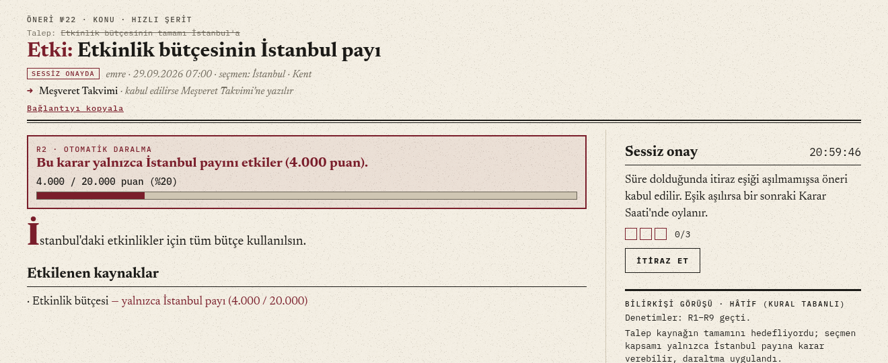
Şekil 1. №33 önerisi. Talep "Etkinlik bütçesinin tamamı İstanbul'a" idi (üstte üstü çizili). İstanbul kapsamı yalnızca kendi payına karar verebildiği için oylanan şey "Etki: Etkinlik bütçesinin İstanbul payı" oldu. Çerçeveli kutu payı gösterir (4.000 / 20.000 puan); Hâtif yorumunda daraltmanın gerekçesini yazar.
Muhatap: yetki alanı (R9)
Bir konu bir kuruma iletilecekse, kapsam yalnızca kendi yetki alanındaki kuruma yazabilir. Bir şehrin sakinleri başka bir şehrin belediyesine ya da bir bakanlığa topluluk adına yazamaz; ilgi grupları belediyeye yazamaz, çünkü bir şehrin sakini değildirler.
Seçmen kapsamı
Meşveret Takvimi
Bir belediye
Bütün belediyeler
Bakanlıklar
Genel
✓
✓
✓
✓
Şehir (ör. İstanbul)
✓
yalnız kendi belediyesi
✗
✗
Yaş grubu
✓
✗
✗
✓
İlgi
✓
✗
✗
✓
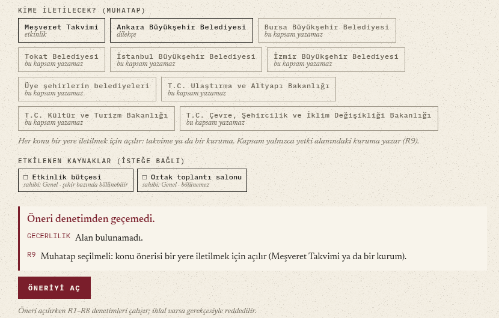
Şekil 2. Ankara kapsamıyla açılan konu önerisi. Form, Ankara'nın yazamayacağı muhatapları "bu kapsam yazamaz" diye soluk gösterir. Muhatap seçilmeden gönderilen öneri R9 gerekçesiyle reddedildi ve kaydedilmedi; aynı anda alan seçilmediği için geçerlilik ihlali de listelendi.
14Öneri ve karar akışı
Her yapısal değişiklik bir öneridir. Öneri ya 24 saatlik sessiz onayla (itiraz eşiği aşılmazsa) ya da haftalık Karar Saati'nde oyla kabul edilir.
Öneri türü
Ne yapar
Şerit
Eşik (Karar Saati'nde)
KONU
Yeni konu açar; muhatabı seçilir, takvime gidiyorsa etkinliğin tarihi ve yeri yazılır
Hızlı
Basit çoğunluk (> 1/2)
ALT_KONU
Konunun altında konu açar; muhatap üstten gelir
Hızlı
Basit çoğunluk
DÜZENLEME
Başkasının mesajını ya da açılış metnini değiştirir
Hızlı
Basit çoğunluk
SİLME
Mesajı ya da konuyu gizler
Yavaş
≥ 2/3 (kendi mesajı: basit çoğunluk)
YÖNETMELİK
Madde değiştirir, içerik kuralı ekler ya da kaldırır
Yavaş, Genel kapsam
≥ 2/3
KAPANIŞ
Konuyu bir Karar'a bağlar; 48 saat rakip metin eklenir
Yavaş
Onay oylaması: en çok onay alan metin
İtiraz eşiği: en az 3 ya da kapsamdaki aktif üyelerin %5'i (aktif: son 30 günde giriş yapmış). Eşik aşılınca öneri hemen yavaş şeride geçer. Öneri sahibi kendi önerisine itiraz edemez; aksi hâlde kendi önerisini bir haftalık Karar Saati kuyruğuna çekerek erteleyebilirdi.
Durum geçişleri: taslak, sessiz onay, rakip metin süresi, kuyruk, oylama, kabul, ret ve pay çakışması ayrı durumlardır; her durum yalnızca kendi geçişlerine izin verir. Karara bağlanmış bir öneri ikinci kez kabul edilemez (§8, State).
Karar Saati: açılışta seçmen listesi, havale grafı ve yönetmelik dondurulur; pencere boyunca havale verilemez ve geri alınamaz. Oylar mühürlü verilir, kapanışta açılır ve sayılır.
Olgunlaşma: öneri oylanmadan önce dar etkiliyse 48 saat, geniş etkiliyse 72 saat, Genel kapsamlı ya da yönetmelik önerisiyse 7 gün yayında kalır. Tartışmaya zaman ayrılır.
Tekrarı önleme: oylamayla reddedilen hedefe 30 gün yeniden öneri açılamaz (R6). Karara bağlanan konu 90 gün sonra yeniden açılabilir.
Hâtif: kural tabanlı sembolik bilirkişi. Her öneriye yorum yazar, oylamada R1–R9 ve H1–H4'e göre EVET ya da HAYIR verir. Gerçek bir yapay zekâ servisi bilinçli olarak kullanılmadı.
Şekil 3. Karar Saati #1'in sonuç açıklaması. Solda kapanış onay oylaması: üç rakip metinden 11 onay alan "Parklar her gün 22:00'de kapansın" Karar oldu. Sağda "Gece metro seferleri" 8/13 ağırlıklı EVET (%61,5) ile kabul edildi. İki oylamada da 5 hesap baskın şüphesiyle sayılmadı. Temsilcilerin ve Hâtif'in oyu açık; diğer oylar yalnızca toplamlara katıldı.
15Yönetmelik ve değiştirilemez maddeler
Eşikler ve süreler oylanabilir yönetmelik maddelerinde durur. Yedi ilke ve her parametrenin izinli aralığı oylamanın dışındadır; bunları değiştirmeye çalışan öneri açılışta reddedilir (R8).
Madde
İlke
D1
Her yurttaşın bir temel oyu vardır.
D2
Her yurttaş öneri açabilir.
D3
Kaybeden taraf şerh ekleyebilir; şerh silinemez.
D4
İçerik yalnızca oylamayla silinebilir.
D5
Eşzamanlı çoğunluk ilkesi.
D6
Defter değiştirilemez.
D7
Bu liste değişmez: madde eklenemez, çıkarılamaz, parametre aralıkları genişletilemez.
Parametre
Varsayılan
İzinli aralık
sessiz_onay_suresi
24 saat
12 – 72 saat
itiraz_esigi
en az 3; aktif üyelerin %5'i
3–20 itiraz · %2–%20
basit_cogunluk
> 1/2
> 1/2 – ≥ 2/3
yonetmelik_esigi
≥ 2/3
≥ 2/3 – ≥ 3/4
silme_esigi
≥ 2/3
≥ 2/3 – ≥ 3/4
orantisizlik_esigi
10 yüzde puanı
5 – 30
red_bekleme
30 gün
7 – 90 gün
ilgi_bekleme / adres_bekleme
14 gün / 90 gün
0–30 / 0–180 gün
havale_suresi
180 gün
30 – 365 gün
olgunlasma_dar / genis / genel
48 saat / 72 saat / 7 gün
24 saat – 14 gün
mahzen_kapasite / ust_sinir
100 başlık / 300 yanıt
30–300 / 50–1000
karar_saati
Pazar 20:00, 60 dakika
pencere 30 – 180 dakika
Kendini koruma:yonetmelik_esigi da 2/3 ile, o anki değeriyle değişir; muafiyet yoktur.
Anlık görüntü: Karar Saati açılırken bütün değerler dondurulur. Bir oturumda kabul edilen değişiklik bir sonraki oturumdan itibaren geçerlidir; sayım sırasında eşik kaymaz.
Örnek: tohumdaki Karar Saati #1'de sessiz onay süresi 2/3 ile 24 saatten 36 saate çıkarıldı. Aynı öneri 80 saat isteseydi R8 açılışta reddederdi.
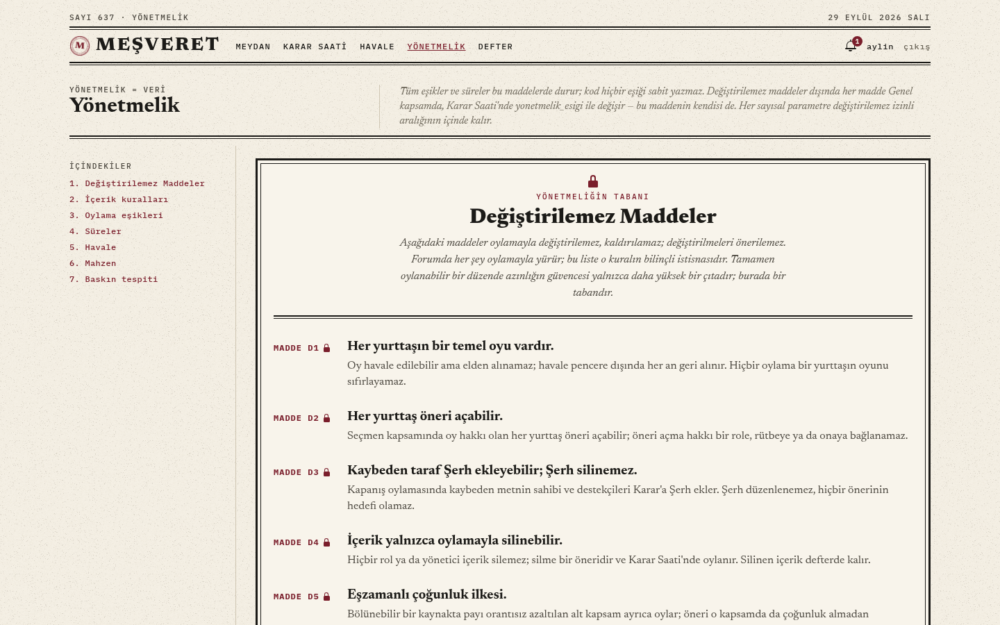
Şekil 4. Yönetmelik sayfası. Değiştirilemez maddeler çift çerçeveli, kilit işaretli bölümde durur; parametrelerin değeri ve izinli aralığı aşağıdaki bölümlerde listelenir.
16Havale (oy devri)
Oy hakkı, bütün alanlarda ya da tek bir alanda güvenilen birine devredilebilir. Havale, alan kişi kabul edince yürürlüğe girer ve 180 gün sonra düşer.
Kapsam ve miras: bir alana verilen havale alt alanları da kapsar; daha özel havale önceliklidir. Zincirleme serbesttir.
Döngü yasağı (R4): mirası da izleyerek döngü kuran havale reddedilir; döngüde oy hiçbir yere varmaz.
Kabul: havale istek olarak başlar; alan kişi 7 gün içinde kabul eder, reddeder ya da sonradan iade eder. "Havale kabul etmiyorum" seçeneği vardır.
Süre: 180 gün sonra düşer; 14 gün önce uyarı gösterilir, kişi yeniler. Unutulmuş havaleler güç biriktirmez.
Pencere kilidi: Karar Saati açıkken havale verilemez ve geri alınamaz.
Açık temsilci oyu: ağırlığı 1'den büyük olan (başkalarının oyunu taşıyan) kişinin oyu açıktır; seçmenler temsilcilerinin ne oy verdiğini görür.
Müşavir: bir alanda en az 5 doğrudan havale alan kişi bu etiketi taşır. Etiket görünürlüktür, rütbe değildir. Ödevin "herkes eşit, bazıları daha eşit" ifadesi havale ağırlığıyla karşılanır.
17İçerik ve silme
Tartışmaya yazmak oylamasızdır. Başkasının içeriğini silmek bir içerik kuralına dayanmalı, kuralı ihlal eden kısmı metinden aynen alıntılamalı (R7) ve kullanılan oyların 2/3'ünü almalıdır. Silinen içerik sitede gizlenir, defterde kalır.
Kural
Başlık
Kapsadığı
IK-1
Spam ve reklam
Tartışmayla ilgisiz ticari tanıtım, reklam, aynı iletinin tekrarı
IK-2
Hakaret ve tehdit
Kişiyi ya da grubu aşağılayan söz, küfür, zarar verme tehdidi; sert eleştiri hakaret değildir
IK-3
Kişisel bilgi ifşası
Başkasının telefonu, adresi, kimlik numarası gibi bilgilerini rızası olmadan paylaşmak
"Konu dışı" kuralı bilerek yoktur. Neyin konu dışı olduğunu çoğunluk belirler; böyle bir kural, çoğunluğun beğenmediği her görüşü silmenin gerekçesi olurdu.
Kendi mesajını silmek gerekçe istemez ve basit çoğunlukla olur.
Hâtif (H4) dayanılan kuralın anahtar kelimelerinden birinin alıntıda geçip geçmediğine bakar ve bulduğu kelimeyi yazar.
Düzenleme: kişi kendi mesajını serbestçe yeni sürümle düzenler; başkasının mesajı DÜZENLEME önerisiyle değişir. Sürüm geçmişi ve fark görünümü herkese açıktır.
Tohumdaki 4. senaryo üç sonucu gösterir: IK-2 (hakaret) gerekçeli silme %60 EVET aldı ve 2/3'e ulaşamadığı için içerik kaldı; IK-1 (spam) gerekçeli silme %67 ile kabul edildi; yazarın kendi mesajını silme isteği 7/12 ile kabul edildi.
Sansür şeridi. Silinen mesajın yerinde siyah bir şerit durur: hangi oylamayla, hangi kurala dayanarak ya da yazarın isteğiyle silindiği ve defterdeki hash'i. Okuyucu bir şeyin silindiğini ve nedenini görür; içerik isteyen herkes için defterde açıktır. Silinen mesaja eklenmiş fotoğrafın adresi de 410 (artık yok) döner.
Şeritteki yazının rengi erişilebilirlik denetiminde değişti: bordo yazı siyah zeminde 2,0:1 kontrastla okunmuyordu; aynı tonun açık hâli (#D4576B) 5,4:1 verir.
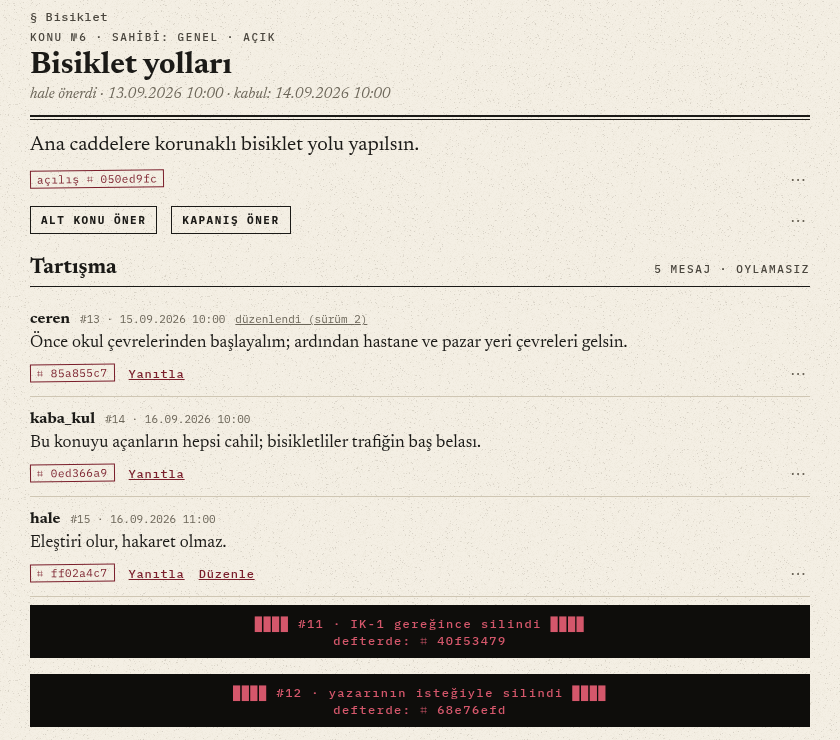
Şekil 5. Bisiklet yolları konusu: #11 IK-1 gereğince, #12 yazarının isteğiyle silindi. Hakaret içeren #14 ise 2/3'e ulaşamadığı için görünür kaldı (29 Eylül görüntüsü).
18Mahzen: neden var
Mahzen, kimliğin bedel olduğu düşüncelerin kimliksiz tartışılabildiği, kayda geçmeyen ve kendiliğinden silinen bir alandır. Bir düşünce karara dönüşmek isterse yazanların kimliği açılır.
Meydan'da her şey kimlikli ve kalıcıdır. Bu sorumluluk sağlar, ama azınlıkta kalan ya da henüz olgunlaşmamış bir düşünceyi söylemenin bedelini de artırır: söylenen her şey bir takma ada ve deftere bağlanır. Mahzen bu düşünceler için anonim, geçici bir felsefe tartışması (diskur) yeridir. Ödevin akran öğrenmesi gereği de buradan beslenir. Mahzen teşvik edilmez: Meydan'ın altında sade bir bağlantıdır, bildirim ve sayaç yoktur.
Gölge kimliği: her yazar başlığa özel bir kimlik alır (sunucu anahtarıyla HMAC). Aynı başlıkta izlenebilir, başlıklar arasında eşleştirilemez.
Geçicilik: 100 başlık sınırı aşılınca en alttaki başlık kalıcı silinir; 300 yanıttan sonra başlık yükselmez; yaşayan başlık deftere yazılmaz; eskiyen metin görsel olarak çürür.
Denetim yok: içerik kuralı ve silme önerisi yoktur; kaba bir başlık aşağı düşerek kaybolur. Fotoğraf eklenmez; fotoğraf kimlik sızdırabilir.
Köprü: başlıkta yazanlar "öneriye dönüştür" oylaması açabilir. Oylar gizlidir ve değiştirilebilir. Seçmen listesinin yarısından fazlası EVET deyince başlık donar, takma adlar açılır, kayıt deftere yazılır ve içerikten taslak bir konu önerisi oluşur.
Rıza: ilk yazışta bu sonuç açıkça yazılır; onaylanmadan mesaj kabul edilmez.
Anonim konuşma serbesttir, ama karar kimliksiz alınmaz. İfşa oylamasının kendisi bir çoğunluk tiranlığıdır; bunu bilinçli açık olarak yazdık (§24).
Şekil 6. "Çoğunluk haklı olabilir mi?" başlığı: Gölge kimlikleri, ömür çubuğu ve açık ifşa oylaması (5 seçmen, geçmesi için 3 EVET). 29 Eylül görüntüsü.
19Kararların sonucu: muhatap, dilekçe, takvim, gazete
Her konu önerisi bir yere iletilmek için açılır: Meşveret Takvimi'ne ya da bir kuruma. Kurum muhataplı konu kabul edilince kuruma dilekçe gider; takvime giden konu kabul edilince etkinlik takvime yazılır. Meydan'ın ön sayfası bu sonuçları bir gazete gibi yayımlar.
Bu bölüm, sistemin ilk sürümündeki bir eksikten doğdu: kabul edilen kararlar yalnızca forumu değiştiriyordu (konu açılıyor, metin değişiyor, kural değişiyordu) ve dünyada bir karşılığı yoktu. Artık her kararın bir alıcısı ve izlenebilir bir sonucu vardır.
Muhatap ve dilekçe
Muhataplar: Meşveret Takvimi; üye şehirlerin belediyeleri (30 büyükşehir için "Büyükşehir Belediyesi", diğerleri için "Belediyesi"), bütün belediyeler birden; Ulaştırma ve Altyapı, Kültür ve Turizm, Çevre, Şehircilik ve İklim Değişikliği bakanlıkları. Yönetmelik, silme ve düzenleme önerileri Meşveret'in iç düzenine gider.
Dilekçe: evrak numarası (MŞV-2026-0001), konu, alıcılar, kabul edilen metin ve imza satırı. İmza satırı kararın nasıl alındığını yazar: Karar Saati sonucu ya da "itirazsız kabul".
Yanıt süresi: 3071 sayılı Dilekçe Hakkının Kullanılmasına Dair Kanun'a göre 30 gün. Durum hesaplanır: yanıt bekleniyor, yanıtlandı, süresinde yanıt verilmedi.
Yanıt: kurumun yanıtını konunun bir katılımcısı işler: yazının metni, tarihi, sayısı ve taranmış görüntüsü. Yanıt deftere mühürlenir; öneri sahibine ve konunun katılımcılarına bildirim gider.
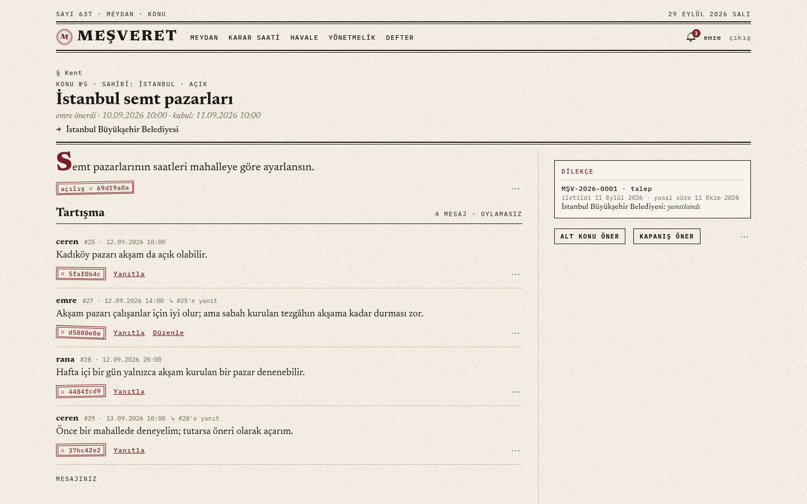
Şekil 7. İstanbul kapsamındaki "İstanbul semt pazarları" konusu. Başlığın altında muhatap (→ İstanbul Büyükşehir Belediyesi), yan sütunda dilekçe kutusu: MŞV-2026-0001, 11 Eylül'de iletildi, yasal süre 11 Ekim, durum "yanıtlandı".
Şekil 8. Dilekçe resmî yazı düzeninde: antet, sayı, tarih, konu, alıcı, metin, imza satırı ve defter mührü. Altta İBB'nin 20 Eylül tarihli yanıtı ve onu işleyen üye.
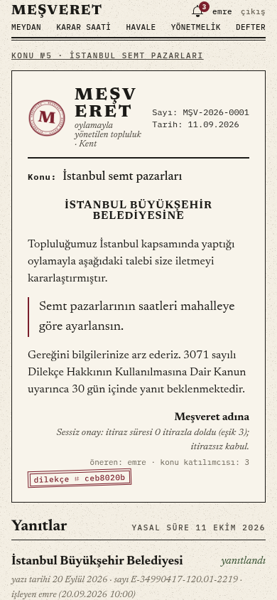
Şekil 9. Aynı dilekçe telefonda.
Takvim ve etkinlik
Takvime giden bir konu önerisine etkinlik bilgisi eklenir: tarih, saat, süre ve yer. Yer üç türdür: ortak toplantı salonu, bir adres ya da çevrim içi bağlantı. Konu kabul edilince etkinlik takvime yazılır, deftere ETKINLIK_PLANLANDI kaydı düşer ve öneri sahibine bildirim gider.
Salon bir kaynaktır. Ortak toplantı salonunun sahibi Genel kapsamdır. Salonu seçen öneri bu kaynağı kendiliğinden etiketler; R2 gereği yalnızca Genel kapsamla açılabilir. Bir şehir grubu salonu kendi başına ayıramaz.
Çakışma: aynı salonda saatleri kesişen planlı bir etkinlik varsa öneri açılışta reddedilir. İki bekleyen öneri aynı saati isterse önce kabul edilen salonu alır; ikincisi kabul edildiğinde etkinlik yazılmaz ve öneri sahibine bildirilir.
Zaman: etkinlik, önerinin karara bağlanabileceği en erken andan (sessiz onay süresinden) sonra başlamalıdır; süre 15 dakika ile 12 saat arasındadır.
Katılım ve rapor: üyeler etkinlik başlayana kadar "Geliyorum" diyebilir. Etkinlik bittikten sonra katılacağını bildirmiş olanlar birer rapor yazar: metin, katılımcı sayısı ve en çok dört fotoğraf. Rapor deftere ETKINLIK_RAPORU olarak mühürlenir.
Takvim uygulamalarına aktarma: takvimin tamamı ve her etkinlik iCalendar (.ics, RFC 5545) olarak indirilir; telefonun ya da e-postanın takvimine eklenir.
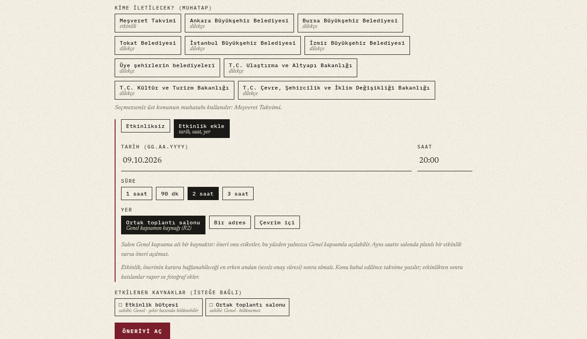
Şekil 10. Konu önerisi formu. Muhatap olarak Meşveret Takvimi seçilince etkinlik alanları açılır: tarih, saat, süre ve yer. Ortak salon seçilince form, salonun Genel kapsamın kaynağı olduğunu ve çakışan öneri açılamayacağını yazar.Şekil 11. Takvim, ay başlıklarıyla: solda Ekim–Aralık'taki sekiz yaklaşan etkinlik, sağda Eylül'ün son haftasında gerçekleşen beş etkinlik. Dördünün raporu var; kısa film gecesine dört kişi katılacağını bildirmişti, rapor yazan olmadı. Akşam pazarı denemesi İstanbul kapsamında, diğerleri Genel; salondaki etkinliklerin saatleri çakışmaz.Şekil 12. Gerçekleşmiş bir etkinlik: Dekalog I gösterimi. Altı kişi "Geliyorum" demişti; nazli'nin raporuna göre 14 kişi geldi. Rapor ve etkinlik ayrı defter mühürleri taşır; katılım listesi etkinlik bitince kapanır.
Gazete ön sayfası
Meydan'ın ön sayfası kararlardan derlenen haberlerdir. Haberler ayrıca yazılmaz; her biri bir kayıttan üretilir: kabul edilen konu, Karar, iletilen dilekçe, kurumun yanıtı, süresi geçen dilekçe, takvime eklenen ve gerçekleşen etkinlik, yönetmelik değişikliği ve oylamayla silme. Manşet, son yedi günün fotoğraflı en yeni haberidir; fotoğraflı haber yoksa en yeni haber manşet olur. Yan sütunda Karar Saati'ne kalan süre ve yaklaşan etkinlikler durur.
Şekil 13. Ön sayfa geniş ekranda. Manşet en yeni haber: park temizliğinin raporu. Altında takvime eklenen etkinlikler; sağda Karar Saati'ne kalan süre ve yaklaşan etkinlikler.
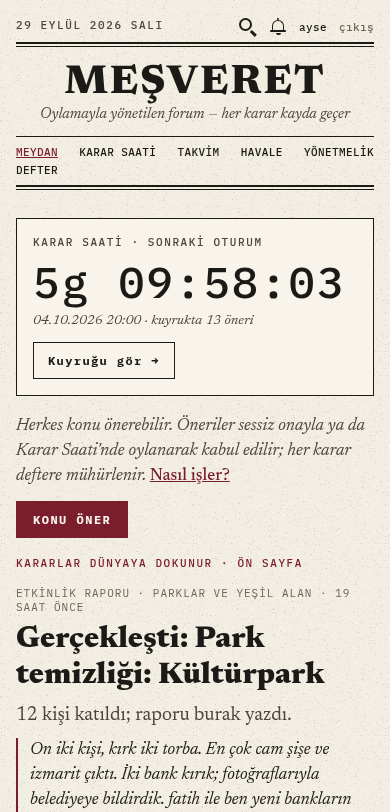
Şekil 14. Aynı sayfa telefonda: önce Karar Saati, sonra manşet.
Sınırlar
İletim sitede bir kayıttır; gerçek bir kuruma e-posta ya da e-Devlet başvurusu gönderilmez. Yanıtı kurum değil üye işler: defter kimin işlediğini kaydeder ama yanıtın gerçekten kurumdan geldiğini doğrulamaz. Etkinlik raporunu da katılımcı yazar; katılımcı sayısı onun beyanıdır. Haberlerin önemini bir editör seçmez; manşet kuralla belirlenir.
20Görseller
Üyeler tartışma mesajlarına, konu önerilerine (kapak), etkinlik raporlarına ve dilekçe yanıtlarına (taranmış belge) fotoğraf ekleyebilir. Sunucu her fotoğrafı yeniden kodlar, konum ve cihaz bilgisini siler ve sitede gösterilen gazete baskısı görünümlü bir sürüm üretir.
Denetim: JPEG, PNG ya da WebP; en çok 8 MB ve 40 megapiksel. Boyut çözülmeden önce kontrol edilir; küçük dosyada dev görsel (sıkıştırma bombası) reddedilir.
Gizlilik: EXIF, GPS konumu ve cihaz bilgisi silinir; telefonun yön bilgisi silinmeden önce uygulanır.
Erişilebilirlik: alt metin zorunludur (3–300 karakter); ekran okuyucu bu cümleyi okur, görselin altında künye olarak da yazılır.
Silme: görselin bağlı olduğu mesaj ya da konu oylamayla silinirse görselin adresi de 410 döner.
Sınırlar: mesaj başına 4 görsel; kişi başına henüz kullanılmamış en çok 12 yükleme. Mahzen'e görsel eklenmez.
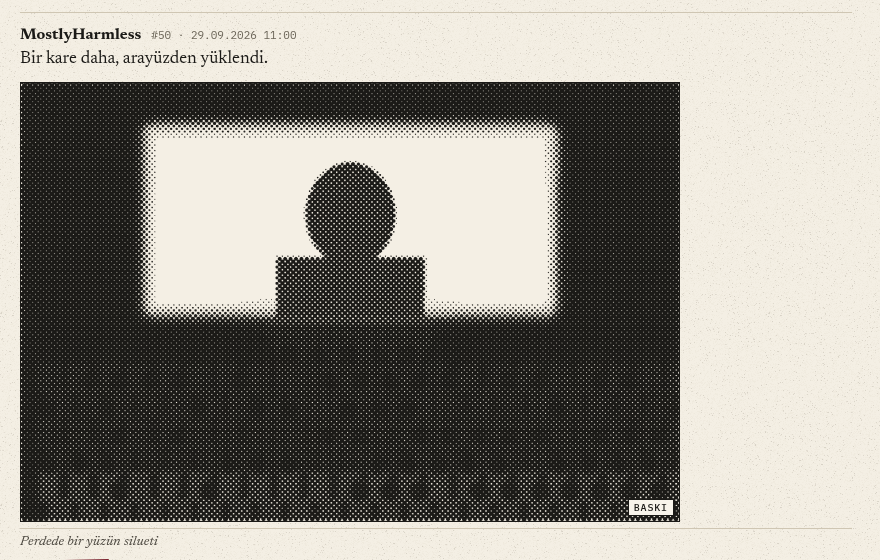
Şekil 15. Tartışma mesajına eklenen fotoğraf, 45° nokta ızgarasıyla 16 tonlu baskı görünümünde. Üstteki fotoğrafa dokunulduğu için özgün renkli sürümü açık; köşedeki etiket hangisinin gösterildiğini söyler. Altta alt metin künye olarak durur.
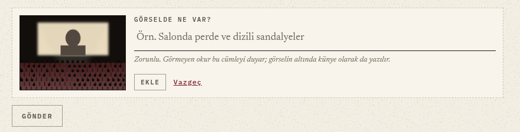
Şekil 16. Yükleme: seçilen fotoğrafın önizlemesi ve zorunlu "Görselde ne var?" alanı. Alt metin yazılmadan "Ekle" düğmesi açılmaz.
21Bütünlük, gizlilik ve güvenlik
Kararların kanıtı üç düğümlü, sadece eklenebilir bir defterdedir. Oylar mühürlenerek verilir, yönetmeliğin oylamasız değiştirilmesi tespit edilip geri alınır, yeni hesaplarla yapılan baskın oylamadan dışlanır.
Defter
Her kayıt bir öncekinin özetine bağlıdır: hash = sha256(önceki_hash ‖ içerik_hash ‖ zaman ‖ tür). Üç düğüm ayrı SQLite dosyalarında tutulur; güncelleme ve silme tetikleyicilerle engellenir. Lider kayıtları takipçilere çoğaltır, geride kalan takipçi yetişir. /verify her düğümün zincirini baştan hesaplar ve düğümleri karşılaştırır: tutarlı, geride, tutarsız ya da bütünlüğü bozuk. Lider erişilemezse kayıtlar API'de bekler ve sırayla gönderilir.
Gizli oy (commit-reveal)
Oy anında deftere seçimin kendisi değil, seçim ve gizli bir tuzdan üretilen mühür yazılır. Pencere kapanınca seçim ve tuz açılır; herkes mührü yeniden hesaplayıp doğrulayabilir. Seçmenin oyu oturuma özel bir takma kimlikle yazılır.
Oylamasız değişiklik tespiti
Yönetmeliğin tam hâli her Karar Saati sonunda özetiyle deftere yazılır. Açılışta ve kapanışta çalışan değerler bu kayıtla karşılaştırılır; veritabanına doğrudan yapılmış bir değişiklik bulunursa deftere yazılır ve son oylanmış hâle geri alınır.
Şekil 17. Defter doğrulaması: zincir ve yönetmelik tutarlı; üç düğümde 646 kayıt, çalışan kodun yönetmeliği defterdeki son kayıtla aynı.
Baskın tespiti
Kullanıcılar arasındaki etkileşimler (yanıt, havale, aynı dakikalarda kayıt, ortak başlık) graftaki ETKİLEŞİM kenarlarına ağırlık olarak işlenir. Karar Saati açılırken son 7 günde katılmış hesaplar arasında, katılım anları 24 saat içinde toplanan, en az 4 kişilik ve kenar yoğunluğu en az 1/2 olan kümeler işaretlenir. İşaretlenen hesaplar oylamanın paydasından çıkar; gerekçe kendilerine ve sonuç ekranında sayı olarak gösterilir, içerikleri silinmez. Kuralın ölçümü, temel çizgilerle karşılaştırması ve sınırları için bkz. §7.
Hesap güvenliği
Şifreler argon2 ile saklanır, oturum JWT ile taşınır. 18 yaş altı kayıt reddedilir. Profilde ad, adres ve doğum tarihi yalnızca sahibine görünür; başkaları takma adı, rolleri ve havale sayısını görür. E-posta doğrulama kodu bu sürümde gerçek e-postayla değil, sunucu günlüğüne yazılarak verilir.
22Küçük kolaylıklar
Kuralları değiştirmeyen ama günlük kullanımı kolaylaştıran eklemeler. Her biri kullanırken karşılaşılan bir sürtünmeden doğdu.
Kolaylık
Hangi sürtünmeyi giderir
Nasıl çalışır
Arama
Eski bir konuyu, öneriyi ya da dilekçeyi bulmak için alanları tek tek gezmek
Başlıktaki büyüteç ya da web'de / tuşu. Konular, öneriler, mesajlar, dilekçeler ve etkinlikler ayrı sütunlarda listelenir. Eşleme Türkçe harf kurallarıyla yapılır ("İSTANBUL" = "istanbul"). Silinen içerik, taslaklar ve Mahzen aranmaz.
Taslak saklama
Uzun bir öneri yazarken sayfa kapanınca metnin kaybolması
Başlık ve metin yazarken bu cihazda saklanır, sayfa yeniden açılınca geri gelir, öneri gönderilince silinir. Sunucuya gitmez.
Başlık sayacı
200 karakter sınırına gönderince takılmak
150 karakteri geçince alanın altında "172/200 karakter" görünür; sınırdan sonra yazı alınmaz.
Bağlantı paylaşma
Bir öneriyi ya da dilekçeyi başkasına göstermek için adresi elle kopyalamak
Öneri, dilekçe ve etkinlik sayfalarında "Bağlantıyı kopyala" (telefonda "Paylaş").
Dilekçe yazdırma
Dilekçeyi kâğıda dökünce menülerin ve düğmelerin de basılması
"Yazdır" yalnızca resmî yazıyı basar; site çerçevesi baskıda gizlenir.
Takvime ekleme
Etkinlik tarihini ayrı bir takvime elle yazmak
Her etkinlik ve bütün takvim .ics olarak indirilir; telefonun takvim uygulaması abone olabilir.
Göreli zaman
"29.09.2026 07:00" gibi tarihlerden ne kadar zaman geçtiğini hesaplamak
Bildirimlerde ve ön sayfada "3 gün önce", "dün", "2 saat sonra"; iki haftadan eski olaylarda tarih.
Açtığınız öneriler
Kendi önerilerinin hangi aşamada olduğunu bulmak
Kendi profilinizde açtığınız öneriler durumlarıyla listelenir; başkasının profilinde görünmez.
Telefondan açma
Aynı ağdaki telefonda site açılınca giriş yapılamaması
İstemci API adresini sayfanın açıldığı makineden türetir; ayrı ayar gerekmez.
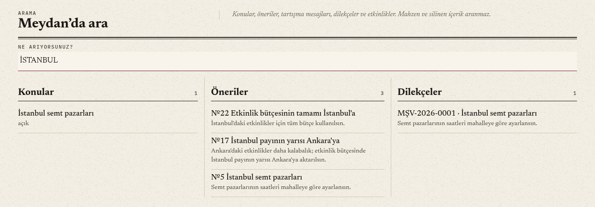
Şekil 18. "İSTANBUL" araması büyük harfle yazıldı; Türkçe kurallarla küçültülüp eşlendi. Konu, üç öneri ve bir dilekçe bulundu.
Bölüm IVSüreç
23Karşılaşılan sorunlar ve çözümleri
Sorunların bir kısmı tasarım sırasında öngörüldü, bir kısmı tarayıcıda, testlerde ve ölçümde ortaya çıktı. Her biri bir kurala, bir yönetmelik maddesine ya da koda dönüştü. Son bölüm bu sürümde, kodun desenlerle yeniden düzenlenmesi ve ölçüm sırasında bulunanlardır.
Sorun
Çözüm
Nerede
Kurallar
Çoğunluk, azınlığa ait bir kaynak hakkında karar verebiliyordu.
Kaynak sahipliği ontolojide tanımlandı; yalnızca sahip kapsam ya da alt kümesi karar verir, alt küme kendi payına daraltılır.
R2, §13
Genel kapsam bir şehrin payını oylamayla başka şehre aktarabiliyordu.
Bölünebilir kaynakta pay etkisi zorunlu oldu; payı orantısız azalan kapsam ayrıca oylar.
D5, §11
2/3'lük bir çoğunluk bütün güvenceleri iki oylamada kaldırabilirdi.
Değiştirilemez maddeler ve izinli aralıklar; R8 bu yöndeki öneriyi açılışta reddeder.
Bağlantı sitenin adresine gider: tarayıcıda Referer'dan, abonelikte yapılandırmadan.
takvim
Veritabanının küçük harf işlevi Türkçe I/İ'yi çevirmez; "İSTANBUL" araması "İstanbul"u bulmazdı.
Eşleme Türkçe harf kurallarıyla uygulamada yapılır.
§22
24Bilinçli açıklar
Sistemin çözmediği ve çözemeyeceği noktaları gizlemedik; tasarım belgesinde 41 madde olarak yazılıdır. En önemlileri şunlardır.
İfşa oylaması bir çoğunluk tiranlığıdır. Mahzen seçmenlerinin yarısından fazlası, karşı oy verenler dahil herkesin kimliğini açar. Uyarı rızayı belgeler, tiranlığı kaldırmaz.
Sahte hesap. Gerçek çözüm e-Devlet gibi bir kimlik doğrulamasıdır ve kapsam dışıdır; baskın tespiti yalnızca hafifletir.
Gerçek gruplar baskın sanılabilir; ölçüldü. Benzetimde birlikte kaydolup birbirine yazan gerçek grupların üyelerinden 263 / 269 hesap işaretlendi; sabırlı ve sessiz baskınların hiçbiri yakalanmadı. Kural yapıya bakar, niyete bakamaz. Dışlama bir oturumluktur ve gerekçesi kişiye gösterilir (§7).
Sunucuya güven. Gizli oyda tuzları pencere boyunca sunucu tutar; defter mühürlerin sonradan değişmediğini kanıtlar, sunucunun dürüst olduğunu kanıtlamaz.
Etiketlemeyi öneri sahibi yapar. Kaynak etiketini hiç koymayan biri R2'yi atlatabilir; itiraz eşiği ve Hâtif'in H2 denetimi bunu hafifletir.
Sessizlik rıza sayılır. 24 saat içinde bakmayan azınlık hızlı şeritteki bir değişikliği kaçırabilir.
Eşik kilitleme. 2/3'lük çoğunluk eşiği 3/4'e çıkarırsa geri indirmek 3/4 ister; izinli aralık bunu 3/4 ile sınırlar.
Defter lideri tek hata noktasıdır. Tutarsızlık yakalanır, ama hangi zincirin doğru olduğunu seçecek dış bir dayanak yoktur.
2/3 gerçek bir hakareti de koruyabilir. Seçmenlerin üçte birinden fazlası isterse kural ihlali olan içerik görünür kalır; çoğunluğun azınlık görüşlerini silebilmesinin zararı daha büyük kabul edildi.
Ölü el. Değiştirilemez maddelerdeki bir hata oylamayla düzeltilemez; tek çıkış forumu baştan kurmaktır.
Dilekçe yanıtını ve etkinlik raporunu üye işler. Defter işleyeni kaydeder; yanıtın kurumdan geldiğini, katılımcı sayısının doğru olduğunu doğrulamaz. Dilekçe gerçekte gönderilmez.
Etkinlik, kabul anında geçmişte kalabilir. İtirazla yavaş şeride geçen bir etkinlik önerisi Karar Saati'nde kabul edildiğinde tarihi geçmiş olabilir; konu açılır, etkinlik takvime yazılmaz.
Arama ve haberler ölçeklenmez. Arama her türde son 2.000 kaydı tarar; haberler her istekte bütün kararlardan yeniden hesaplanır. Manşeti bir editör değil kural seçer.
25Test ve doğrulama
Kurallar ve akışlar otomatik testlerle, arayüz tarayıcıda betikle ve elle denendi. Son tam çalıştırma 9 Ekim 2026: 485 testin hepsi geçti, atlanan yok.
Katman
Ne test edilir
Sonuç
Birim (231)
R1–R9 ve denetim zinciri, öneri durum geçişleri, kayıt defteri, kapsam–muhatap matrisi, havale çözümleme ve döngü, sayım ve eşikler, baskın kümeleri, olgunlaşma, görsel denetimi ve EXIF silme. Değerlendirme düzeneği: metrik formülleri ders notundaki örnekle (DP 40, YN 10, YP 60, DN 890), üretecin ve ayrımın tekrarlanabilirliği, depoların ortak arayüzü, Facade'ın gözlemcilere haber vermesi.
Hepsi geçti
Entegrasyon (225)
Gerçek PostgreSQL ve Neo4j ile: Karar Saati döngüsü, gizli oy, havale kabulü ve süresi, silme, pay çakışması, oylamasız değişiklik, dilekçe ve yanıt, görsel yükleme. Takvim: kabulde etkinlik ve defter kaydı, salonun Genel kapsama ait olması ve çakışma reddi, katılım ve etkinlikten sonra fotoğraflı rapor, geç kabulde etkinlik yazılmaması. Tohum: senaryolar, takvim ve ön sayfa, Türkçe arama.
Hepsi geçti
Defter (29)
Zincir bütünlüğü, bozulma tespiti, üç düğümde çoğaltma ve yetişme
Hepsi geçti
İstemci
TypeScript tür denetimi, ESLint; Mahzen çürümesi ve doğum tarihi maskesi için iki denetim betiği
Temiz
Arayüz
1440 px ve 375 px genişlikte takvim, etkinlik, ön sayfa, arama ve kılavuz; yatay taşma yok. Etkinlikli bir konu önerisi formdan uçtan uca açıldı.
Web'de denendi
Kullanım testi
Farklı tohum hesaplarıyla, masaüstünde ve telefonda betikli akışlar: ziyaretçi olarak gezinme, takvimden "Geliyorum", geçmiş etkinliğe rapor, itiraz ve öneri sahibinin görünümü, mesaja yanıt, arama, salonu dolu saate etkinlik önerisi, bildirimler, profil, Mahzen girişi, .ics dosyası
Dört sorun bulundu ve düzeltildi (§23)
Denenmeyenler: Android'de fotoğraf seçme ile yeni ekranlar (takvim, etkinlik, ön sayfa, arama). Sunum yığını bu sürümün tohumuyla yeniden kurulmadı; bu raporun yeni ekran görüntüleri ayrı bir önizleme yığınından alındı.
26Tasarım denetimi
Arayüz 28 Eylül 2026'da ödev belgesinin tasarım bölümüne (§10 Tasarım) karşı denetlendi: 38 ekran iki genişlikte görüntülendi, kontrast ve taşma otomatik ölçüldü, Mahzen'in ifşa geçişi kare kare kaydedildi. Bulunan hatalar 29 Eylül'de düzeltildi ve ekranlar yeniden ölçüldü.
Denetim kaydı 28–29 Eylül tarihlidir ve o günkü hâliyle aktarılmıştır. O günden sonra değişenler bölümün sonunda ayrıca yazılıdır; öneri numaraları denetim günündeki tohuma göredir. Görüntüler, betik (denetim.mjs) ve ölçüm dosyası (denetim-olcumleri.json) docs/screens/ klasöründedir (116 MB; depoya eklenmedi).
Toplanan görüntüler
Her ekran iki genişlikte, tam sayfa: masaüstü 1440 × 900 (1×), telefon 390 × 844 (2×). Tam sayfa için görüntü alanı, sayfanın kaydırma kabının içerik yüksekliğine ayarlandı; uygulama o genişlikte kendi düzeniyle, kaydırmasız çizildi. Üst sınır 16.000 CSS px. Sınıra takılan üç görüntü kesik: 20, 21 (Mahzen listesi, 91 başlık) ve 29 (sonuç sayımı), hepsi telefonda.
No
Ekran
Veri durumu
01–03
Giriş, kayıt, doğrulama kodu
tohum, oturumsuz
04–05
Ana sayfa (anonim / girişli): ana akış, iki şerit, Karar Saati geri sayımı
tohum
06
Alan sayfası (Ulaşım)
tohum
07
Öneri: hızlı şerit, R2 daraltılmış (№20; ilk denetimde №19)
tohum
08
Öneri: yavaş şerit (№9)
tohum
09
Öneri: pay etkisi, eşzamanlı çoğunluk öncesi (№17)
tohum
10
Öneri: silme gerekçesi (№10)
tohum
11
Konu ve tartışma (Bisiklet yolları)
tohum
12
Mesaj sürümleri ve düzenleme farkı (#13, denetim sırasında düzenlendi)
tohum
13
Karar Saati: geri sayım ve kuyruk
tohum
14–15
Profil: kendi (resmî belge) / Müşavir damgalı (selin)
tohum
16
Yönetmelik, Değiştirilemez Maddeler dahil
tohum
17
Defter ve Yönetmelik bütünlüğü: TUTARLI
tohum
18
Havale
tohum
19
Mahzen giriş uyarısı
tohum, ayse onaydan önce
20–21
Mahzen listesi, CRT açık / kapalı
tohum
22
Mahzen başlığı, ifşa oylaması (No.91)
tohum
23
Mahzen başlığı, çürümüş (No.1, sıra 91)
tohum
24
İfşa sonrası başlık
ayse EVET verdikten sonra
25
Defter: bütünlük FARKLI
yonetmelik_esigi oylamasız 1/2
26
Ana sayfa, pencere açık
oturum #1 açık
27
Karar Saati oy pusulası (ceren)
oturum #1 açık
28
Defter: açılışta tespit edilen değişiklik
oturum #1 açık
29a
Sonuç sayımı, sayım sırasında (№17, 2,5 sn)
oturum #1 kapalı
29
Sonuç sayımı, son hâl
oturum #1 kapalı
29b
Sonuç özeti (sayfa açılışı)
oturum #1 kapalı
30
Sonuç sayımı, azaltılmış hareket, ilk an
oturum #1 kapalı
31
Öneri: eşzamanlı çoğunluk sonucu (№17)
oturum #1 kapalı
32
Konu: sansür şeridi
oturum #1 kapalı
33
Konu: Karar ve kapanış
oturum #1 kapalı
34
Defter: geçmiş listesi
oturum #1 kapalı
35–38
Havale uyarı şeridi (Havale, ana sayfa, profil, alınan havale)
+140 gün
Videolar: ifşa geçişi canlı oyla (masaüstü), ifşadan sonra ilk açılış (telefon), sonuç sayımı (masaüstü ve telefon, yaklaşık 27 sn).
İfşa kareleri: 0, 300, 600, 900, 1.200 ve 1.500 ms. Kareler Playwright'ın sahte saatiyle geçiş adım adım ilerletilerek alındı. Masaüstü ve telefon için ayrı; masaüstü ayrıca azaltılmış hareketle. Her dizinin sonunda bir "son hâl" karesi var.
Ölçümler: her ekran ve genişlik için yatay taşan öğeler ve WCAG kontrastı. Kontrast, metin rengi ile ilk opak ata zemininin opaklık hesaba katılarak karşılaştırılmasıyla ölçüldü. Doku görseli ve CRT katmanı DOM rengi olmadığı için ölçümün dışında; CRT ayrıca hesaplandı.
Yeniden üretmek:denetim.mjs, yığın seed --reset ile baştan tohumlanmışken aşama aşama çalıştırılır; komut sırası dosyanın başında. Betik yerel bir playwright-core ve Chromium yolu ister.
Fark listesi (§10'a karşı)
Önem: Hata tarife ya da WCAG AA'ya aykırı; Sapma tariften bilinçli ya da tartışmalı fark; Not küçük gözlem. İlk denetimde düzeltme yapılmadı; düzeltmeler bir sonraki gün yapıldı (aşağıda).
Konu
Önem
Bulgu
Renkler
Uyan
Kâğıt #F4EFE4 ve doku, mürekkep #1B1A17, bordo #7A1E2B; Mahzen'de #000, #FFB000, #7A5500.
Sapma
"Tek vurgu rengi" dışında onay durumları için yeşil #2F4A2A kullanılıyor: Defter'de "✓ Üç düğüm tutarlı", TUTARLI ve GERİ ALINDI etiketleri (17, 28, 34).
Not
Mahzen'de tarifte olmayan iki ton var: #A87300 (çürüyen metnin alt sınırı) ve #3A2900 (çizgiler).
Fontlar
Uyan
Newsreader metin ve başlıklarda; IBM Plex Mono hash ve sayılarda; Mahzen'de her yerde mono, başlıklarda VT323.
Sapma
Mono yalnızca hash ve sayılarda değil. Gezinme, üst başlıklar, düğmeler, etiketler, sayım fişleri ve Hâtif görüşü de büyük harfli, harf aralıklı IBM Plex Mono. Tarif mono'yu "hash'ler ve sayılar için" diyor.
Sansür şeridi
Uyan
Tam genişlikte siyah şerit (#0E0D0B), mono yazı, oylama numarası ve dayanılan kural ("#11 · IK-1 gereğince silindi").
Sapma
Yazı bordo (#7A1E2B) değil, açık bordo (#D4576B). Bordo siyah üstünde 2,0:1 kalıyor; gerekçe tasarım belgesinde (§13.1).
Hata
Şeritteki "defterde: ⌗ …" bağlantısı 11 px ve 3,87:1 (AA için 4,5 gerekli). Nedeni opacity: 0.85 (client/src/components/paper.tsx:280). Görüntü: 32.
Not
Telefonda "#12 · yazarının isteğiyle silindi" şeridinde blok karakterler alt satıra kayıp 2×2 bir yığın oluşturuyor (32, telefon).
Mühür hash'i
Uyan
Her mesajda takma ad, zaman damgası ve bordo çerçeveli küçük mono hash var. Aynı mühür açılış metninde, kararda, oylarda ve ifşa kaydında da görünüyor (11, 29, 33).
Çürüme
Uyan
Soluklaşma (#FFB000 → #A87300), deterministik bozulma ve ömür çubuğu var. Erişilebilir etiket özgün metni taşıyor.
Sapma
Bozulma "hafifçe" değil. Silinmeye yakın başlıklarda karakterlerin %16'sına kadarı tam blok glifleriyle (▓ ▙ ░ ▚) değişiyor. VT323 başlıkta kelimeler okunmaz hâle geliyor ("devri░░irse ve kims▙"). Kod: client/src/components/cellar.tsx:94-106. Görüntüler: 23, 20 listesinin alt kısmı.
CRT çizgileri ve kapatılabilirlik
Uyan
Çizgiler hafif ve tek görsel katman (performans maliyeti düşük). "crt: açık/kapalı" anahtarıyla kapatılabiliyor, tercih saklanıyor (20 / 21).
Hata
Kontrast: çizgiler her üç piksel satırından birini yaklaşık %39 karartıyor (scanlines.png alfa 110/255 × 0,9). O satırlarda kontrast düşüyor: amber 11,5 → 4,5:1; çürümüş amber 5,1 → 2,5:1; sönük amber 3,1 → 1,8:1. Çizgiler varsayılan olarak açık. Tasarım belgesindeki (§13.2) "Kontrast 4,5:1'in altına inmez" iddiası CRT katmanını hesaba katmıyor. Kod: client/src/components/cellar.tsx:50-66.
prefers-reduced-motion
Uyan
Sonuç sayımı azaltılmış harekette ilk anda son hâlde açılıyor; tüm fişler ve mühür görünüyor, "yeniden oynat" gizli (30).
Hata
İfşa geçişi azaltılmış harekette kapanmıyor. 300. ms karesinde zemin (20,20,19); normal geçişte bu değer (18,17,17). Geçiş yaklaşık 600 ms oynuyor, sonra son hâle sıçrıyor. Neden: useReducedMotion ilk çizimde false döner (client/src/lib/motion.ts:5-17), animasyon başlar; değer true olunca animasyon durdurulmaz, son hâle geçiş 600 ms bekler (client/src/app/mahzen/[id].tsx:108-111). Tasarım belgesindeki (§13.4) "son hâl anında gösterilir" iddiası web'de tutmuyor.
Doğrulanmadı
Mahzen girişindeki kararma geçişi azaltılmış harekette denenmedi.
Kontrast (WCAG AA, Mahzen dahil)
Uyan
Otomatik ölçüme göre, aşağıdakiler dışında 38 ekrandaki tüm metin öğeleri AA'yı geçiyor. Mahzen'deki soluk ve çürümüş metin de CRT'siz ölçümde geçiyor.
Hata
Pencere açıkken ana sayfadaki Karar Saati bandında geri sayım görünmüyor. Bant mürekkep rengine dönüyor, sayaç da mürekkep renginde kalıyor: 1:1. Kod: client/src/app/index.tsx:38 (renk verilmiyor), client/src/components/paper.tsx:455 ve :602 (countBig rengi mürekkep). Görüntü: 26.
Hata
Sansür şeridindeki "defterde" bağlantısı 3,87:1 (yukarıda).
Hata
CRT çizgi satırları (yukarıda).
Not
Pasif düğmeler 2,8–3,0:1. Meydan: Giriş yap, Kodu yeniden gönder, İtiraz et, Getir, Havale et, Gönder. Mahzen: [ gönder ] 2,85:1. WCAG 1.4.3 etkin olmayan arayüz öğelerini muaf tutar; bilgi olarak.
Not
İfşa geçişinin ortasında zemin griye (128,125,119) dönerken metin kontrastı kısa süre düşüyor. Geçiş anı; kabul edilebilir.
Telefon genişliğinde taşma
Uyan
390 px'te 38 ekranın hiçbirinde yatay taşma yok (otomatik ölçüm: sayfa genişliği = ekran genişliği, sağ kenarı taşan öğe yok).
Not
Gezinme iki satıra kırılıyor. "İtiraza açık öneriler" başlığı yan etiketiyle iki satıra bölünüyor (05, telefon).
Not
Profil belge satırları dar ekranda sıkışıyor: uzun değerler iki satıra iniyor, etiketle hizası kayıyor (14, telefon).
Not
Sonuç sayımı sayfası telefonda 16.000 px'i aşıyor; 12 oylamanın bütün fişleri alt alta (29, telefon).
Diğer
Hata
İfşa geçişi masaüstünde sayfa sütununa oturmuyor. Sahne tam genişlikte, yazılar küçük (11–14 px mono), ekranın alt yaklaşık dörtte üçü boş. Geçiş bitince 780 px sütunlu, künyeli sayfaya sıçrıyor. Tarif "Bu ekranı özenle yap" diyor. Telefonda sahne düzgün oturuyor.
Not
İfşa geçişindeki görsel değişim yaklaşık 1.200 ms'de bitiyor (inOut cubic); 1.500 ms karesi 1.200 ile aynı.
Not
Ayrı bir öneri listesi ekranı yok. Öneriler ana sayfadaki iki şeritte ve Karar Saati kuyruğunda listeleniyor; alan sayfası o alandaki açık önerileri göstermiyor (06).
Not
Mahzen giriş uyarısının arkasındaki başlık satırı "kapasite … başlık" gösteriyor; liste onaydan sonra yükleniyor (19).
Not
Kayıt formunda il yer tutucusu "ör. Istanbul" (İ yerine I) (02).
İlk denetimde açılamadı: makinede Android SDK, emülatör ve adb yoktu; bağlı bir cihaz da yoktu. Denenebilen iki şey:
npx expo export --platform android hatasız derleniyor (Hermes paketi, 3 MB). Modül çözümleme ya da yalnız web'de olan içe aktarma kaynaklı bir kırılma yok.
Web'e özgü kullanımlar (document, cursor, outlineStyle) Platform.OS === 'web' ile korunuyor. Pressable'daki hovered yerelde tanımsız kalıyor; zararsız.
Cihazda görülmeden bilinemeyenler: yazı tiplerinin çizimi; ImageBackground resizeMode="repeat" ile kâğıt dokusu ve CRT çizgileri; azaltılmış hareketin sistem ayarından okunması; Expo Go sürümünün SDK 57'yi desteklemesi; yerel ağdaki API'ye düz HTTP erişimi. Üç ekran görüntüsü (giriş, öneri detayı, Mahzen) alınamadı.
Düzeltmelerden sonra (29 Eylül)
Hatalar ve ardından gelen düzeltme listesi iki commit'le düzeltildi (63f75d0, a97d787). Görüntüler aynı adlarla, aynı aşamalarla yeniden alındı (1440 ve 390).
Ölçüm: 01–38 arası bütün ekranlarda, iki genişlikte de kontrast hatası 0 ve yatay taşma 0. Tek istisna 29a telefonda: sayım sırasında henüz belirmekte olan fişler (opaklık 0'a yakın). Bu geçici bir animasyon anı.
Yeni görüntüler: 29a (sayım sırasında, №17), 29b (sonuç sayfası açılışta özetle gelir) ve Android'den üç görüntü (giriş, öneri, Mahzen).
#
Hata
Durum
1
Pencere açıkken geri sayım
Düzeltildi. Bantta açık renk ve "kapanışa" öneki var (26).
2
Sansür şeridindeki "defterde" bağlantısı
Düzeltildi. Opaklık kaldırıldı, 12 px, 5,4:1. Telefonda şerit tek satır ve süs blokları yok (32).
3
CRT satırları
Düzeltildi. Çizgi opaklığı düşürüldü (satır %14 kararır) ve amber tonları açıldı: çürümüş #B88000, sönük #8F6400. Çizgi satırında çürümüş amber 4,7:1, sönük amber 3,2:1.
4
İfşa azaltılmış harekette
Düzeltildi. Tercih ilk çizimden önce matchMedia ile okunur ve 600 ms bekleme kaldırıldı; ilk kare son hâl.
5
İfşa sahnesi masaüstünde
Düzeltildi. Sahne sayfa sütununda ve tipografisi son sayfayla aynı. Künye t > 0,7'de belirir, son kare son sayfanın kendisidir.
Sonuç sayımı videosu (29 Eylül akşam): ilk düzeltme turundaki videolar ve 29a/29 görüntüleri hareketsiz bir özet gösteriyordu. ?izle=17 sayımı oynatıyordu, ama №17 sayfanın aşağısında kaldığı için kayıt ekranın dışında kalıyordu. Sayfa artık sayımı oynatılan önerinin bölümüne kayıyor. Videolar ve 29–30 görüntüleri yeniden alındı: sayım 4. saniyeden 16. saniyeye kadar düşüyor. Bu görüntülerin veri durumu, demo modunun 5. adımıdır.
Kayıt formundaki "ör. Istanbul": nedeni metin değildi. Chrome yer tutucuyu satır kutusuna kırpıyor ve "İ"nin noktası düşüyordu. Genel CSS ile (::placeholder { overflow: visible }) düzeltildi.
Android: emülatörde denendi (Pixel 7 AVD, Android 36, Expo Go 57.0.9, adb reverse ile 8081 ve 8000). Bulunup düzeltilenler: uygulama Mahzen ekranıyla açılıyordu; üst kenar durum çubuğunun altında kalıyordu (Meydan ve Mahzen); Mahzen'de durum çubuğu simgeleri koyu renkteydi; bölüm başlığının sağındaki not satırdan taşıyordu. Yazı tipleri, kâğıt dokusu ve CRT çizgileri cihazda doğru çiziliyor. Android'de azaltılmış hareket denenmedi.
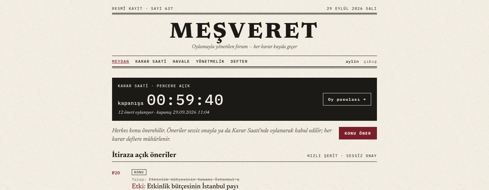
Şekil 19. Düzeltmeden sonra ana sayfa, Karar Saati penceresi açıkken (görüntü 26, 29 Eylül): koyu bantta açık renkli "kapanışa 00:59:40". İlk denetimde sayaç bantla aynı renkteydi (1:1). Görüntü 1 Ekim'deki geniş ekran düzeninden öncedir.
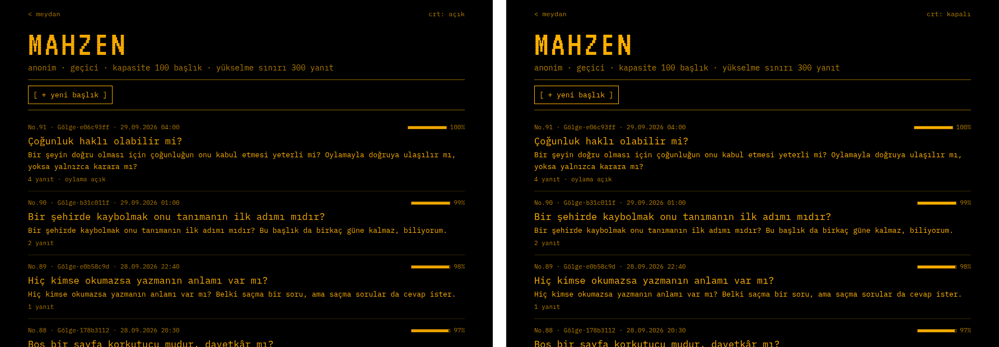
Şekil 20. Mahzen listesi, solda CRT çizgileri açık, sağda kapalı (görüntü 20 ve 21, düzeltmeden sonra). Çizgiler satırı %14 karartır; çizgi satırında bile amber metin AA eşiğinin üstünde kalır.Şekil 21. Mahzen başlığının ifşa geçişi, masaüstü, 0–1.500 ms arasında altı kare (düzeltmeden sonra). Siyah Mahzen sayfası kâğıda döner; sahne sayfa sütununda kalır, son kare son sayfanın kendisidir.
Sonradan değişenler
Geniş ekran düzeni (1 Ekim): 1.024 px ve üstünde sayfalar 1.240 px'lik sütunda, ana ve yan sütunlu düzenle çizilir; "Masaüstünde içerik 780 px'lik sütunda" notu bu düzenden öncedir. Telefon düzeni değişmedi.
Numaralar: tohuma sonradan eklenen öneri ve etkinlikler yüzünden numaralar kaydı; denetimdeki №20 (R2 daraltılmış öneri) bugün №33 numarasını taşır.
Kullanım testi (9 Ekim): görsel denetimin yerine geçmez; akışları kullanıcı gözüyle sınar. Bulguları ve düzeltmeleri §23 ve §25 bölümlerindedir.
27Yapay zekâ kullanım beyanı
Bu ödevde yapay zekâ destekli bir kodlama aracı kullanıldı: Claude Code (Anthropic; model Claude Opus 5.5). Ders notundaki ayrımla söylersek, yapay zekâ ürünün içinde değil, geliştirme sürecinde kullanıldı. Ürünün kendisinde öğrenen bir model yoktur; Hâtif kural tabanlıdır (§4).
İş
Kim yaptı
Temel tasarım
Öğrenci. İki mod (Meydan ve Mahzen), öneri türleri, Karar Saati, havale, Hâtif ve temel kurallar öğrencinin tasarım belgesinden gelir.
Belgedeki boşluklar
Yapay zekâ yorum önerdi; öğrenci onayladı ya da değiştirdi. Kararlar ve gerekçeleri tasarım belgesinde (DESIGN.md §14) listelidir. Bu sürümde öneri sahibinin kendi önerisine itiraz edememesi kuralını yapay zekâ koydu; öğrencinin onayına sunuldu.
Yeni mekanizmalar
Öğrencinin isteği ya da onayıyla eklendi (ör. muhatap, dilekçe, takvim, gazete, görseller, kodun desenlerle yeniden düzenlenmesi). Ayrıntılı tasarımı yapay zekâ önerdi.
Kod, testler, tohum verisi, belgeler
Yapay zekâ yazdı; öğrenci yönlendirdi, siteyi kullanıp bulduğu sorunları bildirdi. Tohumdaki farklı siyasi görüşlerden mesajlar ve takvim etkinlikleri öğrencinin isteğiyle eklendi; metinlerini yapay zekâ yazdı.
Ölçüm, kullanım testi ve bu rapor
Benzetim, ölçüm betikleri, betikli kullanım testi ve rapor metni yapay zekâ tarafından yazıldı; kullanım testinin bulduğu sorunları da yapay zekâ düzeltti. Rapordaki sayılar elle yazılmadı; ölçüm dosyalarından bir betikle üretildi.
Çıktılar nasıl doğrulandı
Kod: her değişiklikten sonra otomatik testler, tür denetimi ve lint çalıştırıldı (485 test). Yeniden düzenleme, öncesinde ve sonrasında aynı testlerden geçti.
Arayüz: ekranlar tarayıcıda iki genişlikte açılıp görüntüleri incelendi; formlar uçtan uca dolduruldu.
Sayılar: tablolar ve grafikler docs/rapor/olustur.py ile docs/degerlendirme/ altındaki ölçüm dosyalarından üretilir. Sınama kümesi sabit bir dosyadır; sonuçlar yeniden çalıştırılabilir.
Kaynaklar: kaynakçadaki kitap ve makaleler ders notlarında geçenlerdir; kanunun yayım bilgisi resmî mevzuat kaynağından denetlendi.
Kodun ve raporun bütün sorumluluğu öğrenciye aittir.
28Kaynaklar
Takan, S. (2026). Yapay Zekâ Mühendisliğine Giriş; Temel Modelleri Anlamak; Problem Çerçeveleme (Hafta 2). Yapay Zekâ Mühendisliği ve YZ Destekli Yazılım Geliştirme ders notları, Ankara Üniversitesi.
Takan, S. (2026). Yazılım Tasarım Desenleri: Yapay Zekâ ve Veri Mühendisliği Perspektifinden. Ders notu, Ankara Üniversitesi.
Gamma, E., Helm, R., Johnson, R., Vlissides, J. (1994). Design Patterns: Elements of Reusable Object-Oriented Software. Addison-Wesley.
Martin, R. C. (2017). Clean Architecture. Prentice Hall.
Huyen, C. (2022). Designing Machine Learning Systems. O'Reilly.
Huyen, C. (2025). AI Engineering: Building Applications with Foundation Models. O'Reilly.